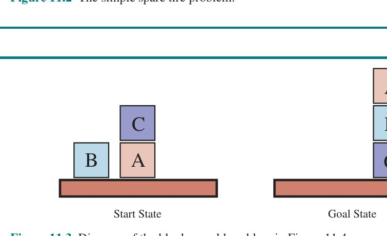
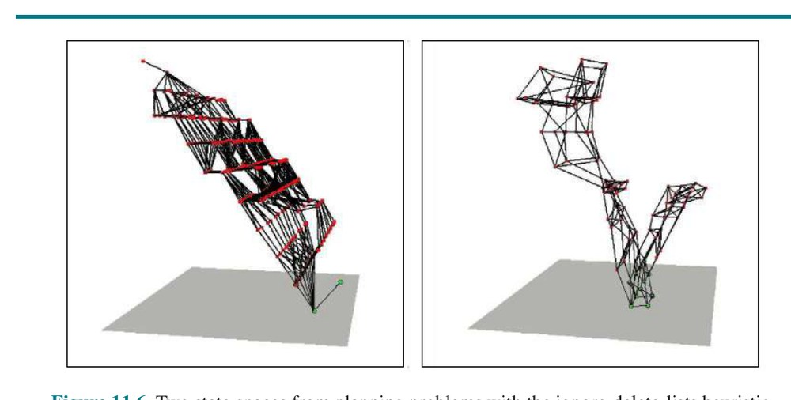
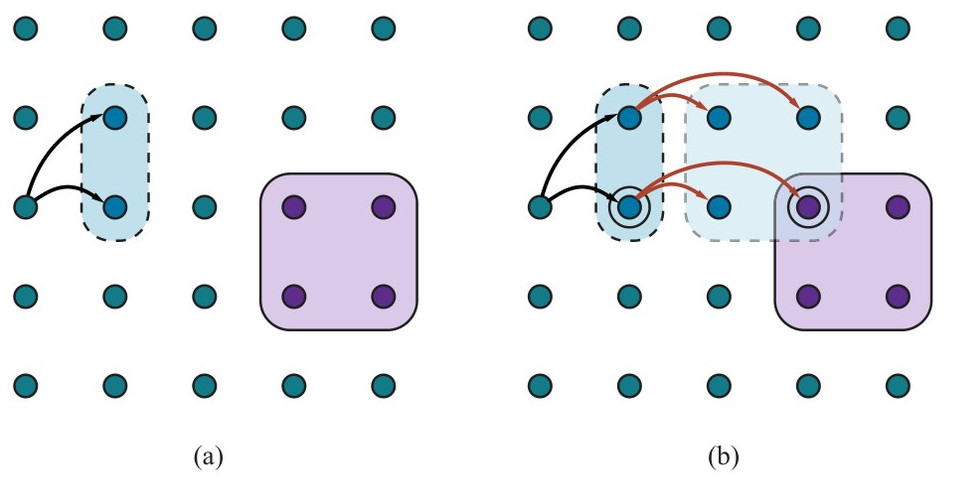
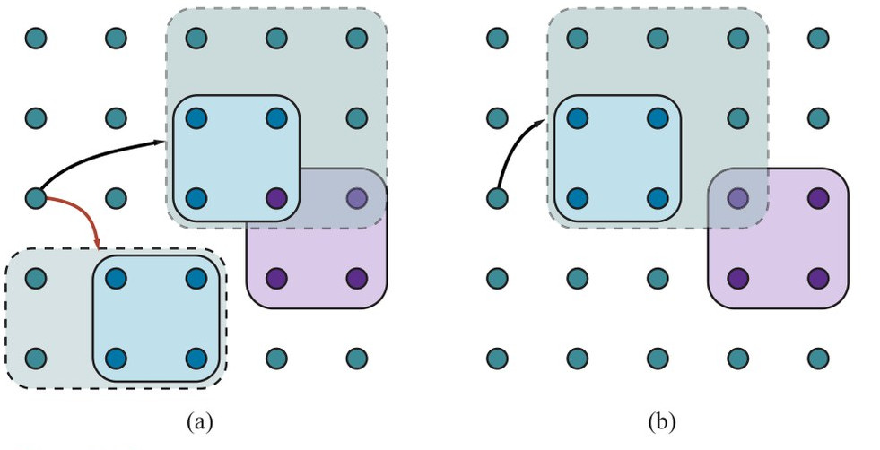
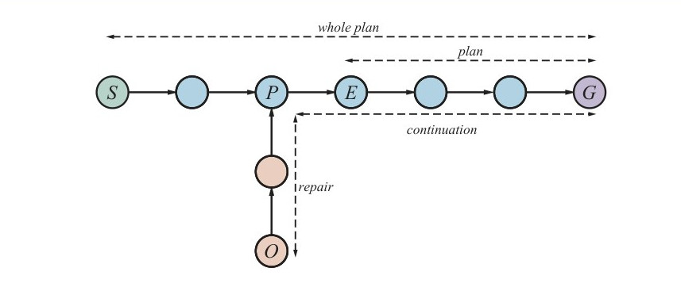
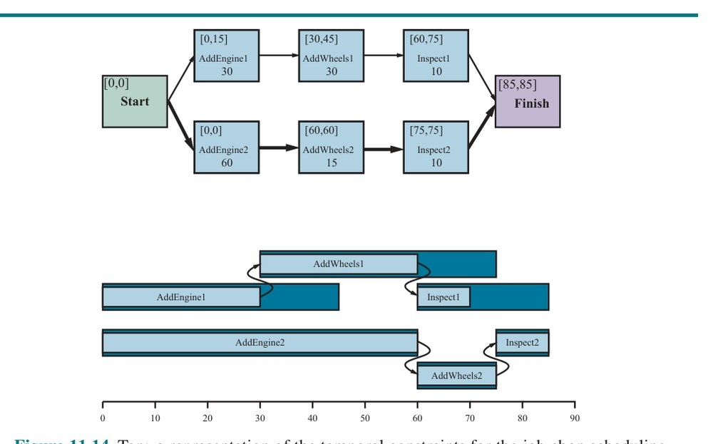

فصل ۱۱: برنامهریزی خودکار (Automated Planning)
برنامهریزی مسیر کنش، نیاز کلیدی عامل هوشمند است. بازنمایی درست کنشها و حالتها و الگوریتمهای درست میتوانند این کار را آسانتر کنند. در بخش ۱۱.۱ زبان بازنمایی عاملیِ عمومی برای مسائل برنامهریزی معرفی میکنیم که میتواند بهطور طبیعی و موجز گسترهٔ وسیعی از حوزهها را بازنمایی کند، کارآمد به مسائل بزرگ مقیاس شود، و برای حوزهٔ تازه به اکتشافیهای موردی (Ad Hoc) نیاز نداشته باشد. بخش ۱۱.۴ زبان بازنمایی را برای اجازه دادن به کنشهای سلسلهمراتبی بسط میدهد و به ما امکان میدهد مسائل پیچیدهتری را هدف بگیریم. الگوریتمهای کارآمد برنامهریزی را در بخش ۱۱.۲ و اکتشافیهای آنها را در بخش ۱۱.۳ پوشش میدهیم. در بخش ۱۱.۵ حوزههای تا حدی قابل مشاهده و ناجبرگرایانه را در نظر میگیریم و در بخش ۱۱.۶ بار دیگر زبان را برای پوشش مسائل زمانبندی با قیدهای منبع بسط میدهیم. این ما را به برنامهریزهایی که در جهان واقعی برای برنامهریزی و زمانبندی عملیات فضاپیماها، کارخانهها و لشکرکشیهای نظامی استفاده میشوند نزدیکتر میکند.
برنامهریزی کلاسیک (Classical Planning) بهعنوان تکلیف یافتن توالی کنشی برای انجام هدفی در محیط گسسته، جبرگرایانه، ایستا و کاملاً قابل مشاهده تعریف میشود. دو رویکرد به این تکلیف دیدهایم: عامل حلکنندهٔ مسئلهٔ فصل ۳ و عامل منطقی گزارهای ترکیبی فصل ۷. هر دو دو محدودیت مشترک دارند. نخست، هر دو برای هر حوزهٔ تازه به اکتشافیهای موردی نیاز دارند: تابع ارزیابی اکتشافی برای جستجو، و کد دستنوشته برای عامل وومپوس ترکیبی. دوم، هر دو نیاز به بازنمایی صریح فضای حالتی بهشکل نمایی بزرگ دارند. برای نمونه، در مدل منطق گزارهای جهان وومپوس، اصلموضوعهٔ حرکت یک گام به جلو باید برای هر چهار جهتگیری عامل، T گام زمانی و n² مکان کنونی تکرار میشد.
در پاسخ به این محدودیتها، پژوهشگران برنامهریزی روی بازنمایی عاملی با خانوادهای از زبانها به نام PDDL، «زبان تعریف حوزهٔ برنامهریزی» (Planning Domain Definition Language) (غَلّاب و همکاران، ۱۹۹۸)، سرمایهگذاری کردهاند که به ما اجازه میدهد همهٔ 4Tn² کنش را با یک «طرح کنش» (Action Schema) تکی بیان کنیم و به دانش حوزهویژه نیاز ندارد. PDDL پایه میتواند حوزههای برنامهریزی کلاسیک را مدیریت کند و بسطها میتوانند حوزههای غیرکلاسیکِ پیوسته، تا حدی قابل مشاهده، همزمان و چندعاملی را مدیریت کنند. نحو PDDL بر لیسپ مبتنی است، اما آن را به شکلی ترجمه میکنیم که با نماد استفادهشده در این کتاب همخوان باشد.
در PDDL، «حالت» (State) بهصورت عطفی از روانهای اتمی زمینی بازنمایی میشود. به یاد آورید «زمینی» یعنی بدون متغیر، «روان» یعنی جنبهای از جهان که در طول زمان تغییر میکند، و «اتمی زمینی» یعنی گزارهٔ تکیای هست و اگر آرگومانی دارد، باید ثابت باشد. برای نمونه، Poor ∧ Unknown میتواند حالت عامل بدبختی را بازنمایی کند و At(Truck1, Melbourne) ∧ At(Truck2, Sydney) میتواند حالتی در مسئلهٔ تحویل بسته باشد. PDDL از معناشناسی پایگاهداده استفاده میکند: فرض جهان بسته بدان معناست هر روانی که ذکر نشده کاذب است، و فرض نامهای یکتا بدان معناست Truck1 و Truck2 متمایزند.
روانهای زیر در حالت مجاز نیستند: At(x,y) (زیرا متغیر دارد)، ¬Poor (زیرا نقیض است)، و At(Spouse(Ali), Sydney) (زیرا از نماد تابع Spouse استفاده میکند). وقتی راحت باشد، میتوانیم عطف روانها را مجموعهای از روانها بدانیم.
«طرح کنش» (Action Schema) خانوادهای از کنشهای زمینی را بازنمایی میکند. برای نمونه، اینجا طرح کنشی برای پرواز هواپیما از مکانی به مکان دیگر است:
Action(Fly(p, from, to),
PRECOND: At(p, from) ∧ Plane(p) ∧ Airport(from) ∧ Airport(to)
EFFECT: ¬At(p, from) ∧ At(p, to))طرح از نام کنش، فهرستی از همهٔ متغیرهای استفادهشده در طرح، «پیششرط» (Precondition) و «اثر» (Effect) تشکیل شده. پیششرط و اثر هر یک عطفهایی از لیتِرالها (جملههای اتمی مثبت یا نقیضشده) هستند. میتوانیم ثابتهایی برای مصداقکردن متغیرها برگزینیم و کنش زمینی (بدون متغیر) به دست آوریم:
Action(Fly(P1, SFO, JFK),
PRECOND: At(P1, SFO) ∧ Plane(P1) ∧ Airport(SFO) ∧ Airport(JFK)
EFFECT: ¬At(P1, SFO) ∧ At(P1, JFK))کنش زمینی a در حالت s «کاربردپذیر» (Applicable) است اگر s پیششرط a را مستلزم باشد؛ یعنی اگر هر لیتِرال مثبت در پیششرط در s باشد و هر لیتِرال نقیضشده نباشد.
نتیجهٔ اجرای کنش کاربردپذیر a در حالت s بهصورت حالت s′ تعریف میشود که با مجموعهٔ روانهای تشکیلشده بازنمایی میشود: با s شروع کن، روانهایی را که در اثرات کنش بهصورت لیتِرالهای منفی ظاهر میشوند حذف کن (آنچه «فهرست حذف» یا DEL(a) مینامیم)، و روانهایی را که لیتِرالهای مثبت در اثرات کنشاند بیفزا (آنچه «فهرست افزودن» یا ADD(a) مینامیم):
RESULT(s, a) = (s − DEL(a)) ∪ ADD(a) (11.1)برای نمونه، با کنش Fly(P1, SFO, JFK)، روان At(P1, SFO) را حذف و روان At(P1, JFK) را میافزاییم.
مجموعهای از طرحهای کنش بهعنوان تعریف «حوزهٔ برنامهریزی» (Planning Domain) خدمت میکند. مسئلهٔ خاص درون حوزه با افزودن حالت آغازین و هدف تعریف میشود. حالت آغازین عطفی از روانهای زمینی است (با کلیدواژهٔ Init در شکل ۱۱.۱ معرفی میشود). مانند همهٔ حالتها، فرض جهان بسته استفاده میشود، یعنی هر اتمی که ذکر نشده کاذب است. هدف (با Goal معرفی میشود) دقیقاً مانند پیششرط است: عطفی از لیتِرالها (مثبت یا منفی) که ممکن است متغیر داشته باشند. برای نمونه، هدف At(C1, SFO) ∧ ¬At(C2, SFO) ∧ At(p, SFO) به هر حالتی اشاره دارد که در آن محمولهٔ C1 در SFO است اما C2 نیست، و هواپیمایی در SFO هست.
شکل ۱۱.۱ مسئلهٔ حملونقل بار هوایی شامل بارگیری و بارخالیکردن محموله و پروازدادنش از مکانی به مکان دیگر را نشان میدهد. مسئله را میتوان با سه کنش تعریف کرد: Load (بارگیری)، Unload (بارخالی) و Fly (پرواز). کنشها روی دو گزاره اثر میگذارند: In(c, p) یعنی محمولهٔ c درون هواپیمای p است، و At(x, a) یعنی شیء x (یا هواپیما یا محموله) در فرودگاه a است. توجه کنید باید مراقبت شود گزارههای At بهدرستی نگهداری شوند. وقتی هواپیما از فرودگاهی به فرودگاه دیگر پرواز میکند، همهٔ محمولههای درون هواپیما با آن میروند. در منطق مرتبهٔ اول سورزدن روی همهٔ اشیای درون هواپیما آسان بود. اما PDDL سور همگانی ندارد، پس به راهحل متفاوتی نیاز داریم. رویکردی که استفاده میکنیم آن است که بگوییم محموله وقتی در هواپیماست، دیگر هیچجا At نیست؛ محموله فقط وقتی بارخالی شود در فرودگاه تازه At میشود. پس At واقعاً یعنی «برای استفاده در مکانِ دادهشده در دسترس».
Init(At(C1, SFO) ∧ At(C2, JFK) ∧ At(P1, SFO) ∧ At(P2, JFK)
∧ Cargo(C1) ∧ Cargo(C2) ∧ Plane(P1) ∧ Plane(P2)
∧ Airport(JFK) ∧ Airport(SFO))
Goal(At(C1, JFK) ∧ At(C2, SFO))
Action(Load(c, p, a),
PRECOND: At(c, a) ∧ At(p, a) ∧ Cargo(c) ∧ Plane(p) ∧ Airport(a)
EFFECT: ¬At(c, a) ∧ In(c, p))
Action(Unload(c, p, a),
PRECOND: In(c, p) ∧ At(p, a) ∧ Cargo(c) ∧ Plane(p) ∧ Airport(a)
EFFECT: At(c, a) ∧ ¬In(c, p))
Action(Fly(p, from, to),
PRECOND: At(p, from) ∧ Plane(p) ∧ Airport(from) ∧ Airport(to)
EFFECT: ¬At(p, from) ∧ At(p, to))برنامهٔ زیر راهحل مسئله است:
[Load(C1, P1, SFO), Fly(P1, SFO, JFK), Unload(C1, P1, JFK), Load(C2, P2, JFK), Fly(P2, JFK, SFO), Unload(C2, P2, SFO)]مسئلهٔ عوضکردن لاستیک پنچر را در نظر بگیرید (شکل ۱۱.۲). هدف آن است که لاستیک زاپاسِ خوب بهدرستی روی اکسل خودرو سوار شود، که حالت آغازین لاستیک پنچر روی اکسل و لاستیک زاپاس خوب در صندوق دارد. برای سادهنگهداشتن، نسخهٔ ما از مسئله انتزاعی است، بدون مهرهٔ چرخ چسبناک یا پیچیدگیهای دیگر. فقط چهار کنش هست: برداشتن زاپاس از صندوق، برداشتن لاستیک پنچر از اکسل، گذاشتن زاپاس روی اکسل، و رهاکردن خودرو بدون مراقبت یکشب. فرض میکنیم خودرو در محلهٔ بهویژه بدی پارک شده، پس اثر رهاکردن یکشبه آن است که لاستیکها ناپدید میشوند.
Init(Tire(Flat) ∧ Tire(Spare) ∧ At(Flat, Axle) ∧ At(Spare, Trunk))
Goal(At(Spare, Axle))
Action(Remove(obj, loc),
PRECOND: At(obj, loc)
EFFECT: ¬At(obj, loc) ∧ At(obj, Ground))
Action(PutOn(t, Axle),
PRECOND: Tire(t) ∧ At(t, Ground) ∧ ¬At(Flat, Axle) ∧ ¬At(Spare, Axle)
EFFECT: ¬At(t, Ground) ∧ At(t, Axle))
Action(LeaveOvernight,
PRECOND:
EFFECT: ¬At(Spare, Ground) ∧ ¬At(Spare, Axle) ∧ ¬At(Spare, Trunk)
∧ ¬At(Flat, Ground) ∧ ¬At(Flat, Axle) ∧ ¬At(Flat, Trunk))برنامهٔ زیر راهحل مسئله است:
[Remove(Flat, Axle), Remove(Spare, Trunk), PutOn(Spare, Axle)]یکی از نامدارترین حوزههای برنامهریزی «جهان بلوکها» (Blocks World) است. این حوزه از مجموعهای بلوک مکعبشکل روی میزی بهاندازهٔ دلخواه بزرگ تشکیل شده.¹ بلوکها را میتوان روی هم چید، اما فقط یک بلوک میتواند مستقیم روی بلوک دیگر قرار گیرد. بازوی ربات میتواند بلوکی را بردارد و به موقعیت دیگری ببرد، یا روی میز یا روی بلوک دیگر. بازو فقط میتواند هر بار یک بلوک بردارد، پس نمیتواند بلوکی را بردارد که بلوک دیگری روی آن است. هدف نمونهٔ معمول، گذاشتن بلوک A روی B و بلوک B روی C است (شکل ۱۱.۳ را ببینید).
از On(b,x) استفاده میکنیم تا نشان دهیم بلوک b روی x است، که x یا بلوک دیگر است یا میز. کنش برای حرکت بلوک b از بالای x به بالای y، Move(b,x,y) خواهد بود. حال، یکی از پیششرطهای حرکت b آن است که هیچ بلوک دیگری روی آن نباشد. در منطق مرتبهٔ اول، این ¬∃x On(x,b) یا بهطور معادل ∀x ¬On(x,b) میشد. PDDL پایه سور اجازه نمیدهد، پس در عوض گزارهٔ Clear(x) معرفی میکنیم که وقتی چیزی روی x نیست صادق است. (توصیف کامل مسئله در شکل ۱۱.۴ است.)

Init(On(A,Table) ∧ On(B,Table) ∧ On(C,A)
∧ Block(A) ∧ Block(B) ∧ Block(C) ∧ Clear(B) ∧ Clear(C) ∧ Clear(Table))
Goal(On(A,B) ∧ On(B,C))
Action(Move(b,x,y),
PRECOND: On(b,x) ∧ Clear(b) ∧ Clear(y) ∧ Block(b) ∧ Block(y) ∧
(b≠x) ∧ (b≠y) ∧ (x≠y),
EFFECT: On(b,y) ∧ Clear(x) ∧ ¬On(b,x) ∧ ¬Clear(y))
Action(MoveToTable(b,x),
PRECOND: On(b,x) ∧ Clear(b) ∧ Block(b) ∧ Block(x),
EFFECT: On(b,Table) ∧ Clear(x) ∧ ¬On(b,x))کنش Move بلوک b را از x به y میبرد اگر هر دو b و y Clear باشند. پس از انجام حرکت، b همچنان Clear است اما y نیست. تلاش نخست برای طرح Move چنین است:
Action(Move(b,x,y),
PRECOND: On(b,x) ∧ Clear(b) ∧ Clear(y),
EFFECT: On(b,y) ∧ Clear(x) ∧ ¬On(b,x) ∧ ¬Clear(y))متأسفانه، این Clear را وقتی x یا y میز است درست نگه نمیدارد. وقتی x میز است، این کنش اثر Clear(Table) دارد، اما میز نباید Clear شود؛ و وقتی y = Table است، پیششرط Clear(Table) دارد، اما میز لازم نیست برای حرکت بلوکی روی آن Clear باشد. برای اصلاح این، دو کار میکنیم. نخست، کنش دیگری برای حرکت بلوک b از x به میز معرفی میکنیم:
Action(MoveToTable(b,x),
PRECOND: On(b,x) ∧ Clear(b),
EFFECT: On(b,Table) ∧ Clear(x) ∧ ¬On(b,x))دوم، تفسیر Clear(x) را «جای خالی روی x برای نگهداشتن بلوکی» میگیریم. تحت این تفسیر، Clear(Table) همیشه صادق خواهد بود. تنها مشکل آن است که هیچچیز برنامهریز را از استفاده از Move(b,x,Table) بهجای MoveToTable(b,x) باز نمیدارد. میتوانیم با این مشکل زندگی کنیم — به فضای جستجوی بزرگتر از لازم میانجامد، اما به پاسخهای نادرست نمیانجامد — یا میتوانیم گزارهٔ Block را معرفی و Block(b) ∧ Block(y) را به پیششرط Move بیفزاییم، چنانکه در شکل ۱۱.۴.
توصیف مسئلهٔ برنامهریزی راهی بدیهی برای جستجو از حالت آغازین در فضای حالتها، در جستوجوی هدف، فراهم میکند. مزیت خوب بازنمایی اعلانی طرحهای کنش آن است که میتوانیم از هدف نیز به عقب جستجو کنیم، در جستوجوی حالت آغازین (شکل ۱۱.۵ جستجوی پیشرو و پسرو را مقایسه میکند). امکان سوم ترجمهٔ توصیف مسئله به مجموعهای از جملههای منطقی است که میتوان الگوریتم استنتاج منطقی را برای یافتن راهحل بر آنها اعمال کرد.
میتوانیم مسائل برنامهریزی را با اعمال هر یک از الگوریتمهای جستجوی اکتشافی فصل ۳ یا فصل ۴ حل کنیم. حالتهای این فضای جستجو حالتهای زمینیاند، که در آنها هر روان یا صادق است یا نه. هدف حالتی است که همهٔ روانهای مثبت هدف مسئله و هیچیک از روانهای منفی را نداشته باشد. کنشهای کاربردپذیر در حالت، Actions(s)، مصداقهای زمینی طرحهای کنشاند — یعنی کنشهایی که متغیرهایشان همه با مقادیر ثابت جایگزین شدهاند.
برای تعیین کنشهای کاربردپذیر، حالت کنونی را با پیششرطهای هر طرح کنش یکسان میکنیم. برای هر یکسانسازی که بهطور موفق به جانشینیای میانجامد، جانشینی را بر طرح کنش اعمال میکنیم تا کنش زمینی بدون متغیر به دست آید. (الزام طرحهای کنش آن است که هر متغیری در اثر باید در پیششرط نیز ظاهر شود؛ بدین ترتیب، تضمین میشود پس از جانشینی متغیری باقی نمیماند.) هر طرح ممکن است به چند طریق یکسان شود. در مثال لاستیک زاپاس (صفحهٔ ۳۴۶)، کنش Remove پیششرط At(obj,loc) دارد که با حالت آغازین به دو طریق مطابقت میکند و به دو جانشینی {obj/Flat, loc/Axle} و {obj/Spare, loc/Trunk} میانجامد؛ اعمال این جانشینیها دو کنش زمینی میدهد. اگر کنشی چند لیتِرال در پیششرط داشته باشد، هر یک از آنها بالقوه به چند طریق با حالت کنونی قابل مطابقت است.
در آغاز، به نظر میرسد فضای حالت ممکن است برای بسیاری از مسائل بیش از حد بزرگ باشد. مسئلهٔ بار هوایی با ۱۰ فرودگاه را در نظر بگیرید، که هر فرودگاه در آغاز ۵ هواپیما و ۲۰ قطعه محموله دارد. هدف انتقال همهٔ محمولهٔ فرودگاه A به فرودگاه B است. راهحل ۴۱-گامی برای مسئله هست: ۲۰ قطعه محموله را در یکی از هواپیماهای A بارگیری کن، هواپیما را به B پرواز بده و ۲۰ قطعه را بارخالی کن.
یافتن این راهحل ظاهراً سرراست میتواند دشوار باشد، زیرا ضریب انشعاب میانگین عظیم است: هر یک از ۵۰ هواپیما میتواند به ۹ فرودگاه دیگر پرواز کند و هر یک از ۲۰۰ بسته یا بارخالی میشود (اگر بارگیری شده) یا در هر هواپیمای فرودگاهش بارگیری میشود (اگر بارخالی شده). پس در هر حالت حداقل ۴۵۰ کنش هست (وقتی همهٔ بستهها در فرودگاههای بدون هواپیما هستند) و حداکثر ۱۰٬۴۵۰ (وقتی همهٔ بستهها و هواپیماها در همان فرودگاهاند). بهطور میانگین، بگوییم حدود ۲۰۰۰ کنش ممکن در هر حالت است، پس گراف جستجو تا عمق راهحل ۴۱-گامی حدود 2000⁴¹ گره دارد.
بدیهی است حتی این نمونهٔ مسئلهٔ نسبتاً کوچک بدون اکتشافی دقیق ناامیدکننده است. هرچند بسیاری از کاربردهای جهان واقعی برنامهریزی به اکتشافیهای حوزهویژه تکیه کردهاند، معلوم میشود (چنانکه در بخش ۱۱.۳ میبینیم) اکتشافیهای مستقل از حوزهٔ قوی را میتوان بهصورت خودکار مشتق کرد؛ همین جستجوی پیشرو را شدنی میکند.
در جستجوی پسرو (که جستجوی بازگشتی (Regression Search) نیز نامیده میشود) از هدف آغاز میکنیم و کنشها را به عقب اعمال میکنیم تا توالی گامی بیابیم که به حالت آغازین میرسد. در هر گام «کنشهای مرتبط» (Relevant Actions) را در نظر میگیریم (در برابر جستجوی پیشرو که کنشهای کاربردپذیر را در نظر میگیرد). این ضریب انشعاب را بهشکل چشمگیری کاهش میدهد، بهویژه در حوزههای با کنشهای ممکن فراوان.
کنش مرتبط کنشی است که اثری دارد با یکی از لیتِرالهای هدف یکسان میشود، اما اثری ندارد که بخشی از هدف را نقیض کند. برای نمونه، با هدف ¬Poor ∧ Famous، کنشی با اثر تکی Famous مرتبط خواهد بود، اما کنشی با اثر Poor ∧ Famous مرتبط دانسته نمیشود: حتی اگر آن کنش ممکن است در نقطهای از برنامه استفاده شود (برای برقراری Famous)، نمیتواند در این نقطه از برنامه ظاهر شود، زیرا آنگاه Poor در حالت نهایی ظاهر میشد.
اعمال کنش در جهت عقب به چه معناست؟ با هدف g و کنش a، «بازگشت» (Regression) از g روی a توصیف حالتی g′ به ما میدهد که لیتِرالهای مثبت و منفیاش چنیناند:
POS(g′) = (POS(g) − ADD(a)) ∪ POS(Precond(a))
NEG(g′) = (NEG(g) − DEL(a)) ∪ NEG(Precond(a))یعنی، پیششرطها باید قبلاً برقرار بودهاند، یا کنش نمیتوانست اجرا شده باشد، اما لیتِرالهای مثبت/منفیِ افزوده/حذفشده توسط کنش لازم نبوده قبلاً صادق باشند.
این معادلات برای لیتِرالهای زمینی سرراستاند، اما وقتی در g و a متغیرهایی هست کمی مراقبت لازم است. برای نمونه، فرض کنیم هدف تحویل قطعه محمولهٔ خاصی به SFO است: At(C2, SFO). طرح کنش Unload اثر At(c,a) دارد. وقتی آن را با هدف یکسان میکنیم، جانشینی {c/C2, a/SFO} را میگیریم؛ اعمال آن جانشینی بر طرح، طرح تازهای به ما میدهد که ایدهٔ استفاده از هر هواپیمایی که در SFO است را در میگیرد:
Action(Unload(C2, p′, SFO),
PRECOND: In(C2, p′) ∧ At(p′, SFO) ∧ Cargo(C2) ∧ Plane(p′) ∧ Airport(SFO)
EFFECT: At(C2, SFO) ∧ ¬In(C2, p′))در اینجا p را با متغیر تازهای به نام p′ جایگزین کردیم. این مصداقی از استانداردسازی جداسازی نامهای متغیر است تا تعارضی میان متغیرهای متفاوتی که اتفاقاً همان نام را دارند نباشد (صفحهٔ ۲۸۴ را ببینید). توصیف حالت بازگشتخورده هدف تازهای به ما میدهد:
g′ = In(C2, p′) ∧ At(p′, SFO) ∧ Cargo(C2) ∧ Plane(p′) ∧ Airport(SFO)بهعنوان مثال دیگر، هدف داشتن کتابی با شماره شابک خاص را در نظر بگیرید: Own(9780134610993). با یک تریلیون شابک ۱۳رقمی و طرح کنش تکی
A = Action(Buy(i), PRECOND: ISBN(i), EFFECT: Own(i))جستجوی پیشرو بدون اکتشافی باید شروع به برشمردن ۱۰ میلیارد کنش زمینی Buy کند. اما با جستجوی پسرو، هدف Own(9780134610993) را با اثر Own(i′) یکسان میکنیم و جانشینی θ = {i′/9780134610993} را میگیریم. سپس روی کنش Subst(θ,A) بازگشت میکنیم تا توصیف حالت پیشین ISBN(9780134610993) به دست آید. این بخشی از حالت آغازین است، پس راهحل داریم و تمام، با در نظر گرفتن فقط یک کنش، نه یک تریلیون.
صورتیتر، توصیف هدف g را فرض کن که شامل لیتِرال هدف gi و طرح کنش A است. اگر A لیتِرال اثری e′j داشته باشد که Unify(gi, e′j) = θ و A′ = SUBST(θ, A) تعریف کنیم و هیچ اثری در A′ نباشد که نقیض لیتِرالی در g باشد، آنگاه A′ کنش مرتبطی به سوی g است.
برای بیشتر حوزههای مسئله، جستجوی پسرو ضریب انشعاب را کمتر از جستجوی پیشرو نگه میدارد. اما این واقعیت که جستجوی پسرو از حالتهای با متغیر استفاده میکند نه حالتهای زمینی، ارائهٔ اکتشافیهای خوب را دشوارتر میکند. این دلیل اصلی ترجیح جستجوی پیشرو توسط اکثریت سامانههای کنونی است.
در بخش 7.7.4 نشان دادیم چگونه برخی بازنویسی هوشمندانهٔ اصلموضوعه میتوانست مسئلهٔ جهان وومپوس را به مسئلهٔ ارضاپذیری منطق گزارهای تبدیل کند که میشد به حلکنندهٔ ارضاپذیری کارآمد سپرد. برنامهریزهای مبتنی بر SAT مانند SATPLAN با ترجمهٔ توصیف مسئلهٔ PDDL به شکل گزارهای عمل میکنند. ترجمه شامل سلسلهای از گامهاست:
FlyP1SFOJFK¹ ⇒ At(P1, SFO) ∧ Plane(P1) ∧ Airport(SFO) ∧ Airport(JFK)(On(A, A) ∧ Block(A)) ∨ (On(A, B) ∧ Block(B)) ∨ (On(A, C) ∧ Block(C))Fᵗ⁺¹ ⇔ ActionCausesFᵗ ∨ (Fᵗ ∧ ¬ActionCausesNotFᵗ)ترجمهٔ حاصل معمولاً بسیار بزرگتر از PDDL اصلی است، اما کارایی حلکنندههای SAT مدرن اغلب بیش از آن جبران میکند.
سه رویکردی که پوشش دادیم تنها رویکردهای آزمودهشده در تاریخ ۵۰ سالهٔ برنامهریزی خودکار نیستند. برخی دیگر را اینجا مختصراً توصیف میکنیم.
رویکردی به نام Graphplan از ساختار دادهٔ تخصصی، «گراف برنامهریزی» (Planning Graph)، برای رمزگذاری قیدهایی دربارهٔ چگونگی ارتباط کنشها با پیششرطها و اثراتشان و دربارهٔ چیزهایی که دوجانبه منحصرند استفاده میکند.
«حساب وضعیت» (Situation Calculus) روشی برای توصیف مسائل برنامهریزی در منطق مرتبهٔ اول است. دقیقاً مانند SATPLAN از اصلموضوعههای حالت-جانشین استفاده میکند، اما منطق مرتبهٔ اول انعطاف و اصلموضوعههای موجزتری اجازه میدهد. در مجموع، این رویکرد به فهم نظری ما از برنامهریزی کمک کرده، اما در کاربردهای عملی تأثیر بزرگی نداشته، شاید بهسبب آنکه اثباتکنندههای مرتبهٔ اول به خوبی برنامههای ارضاپذیری گزارهای توسعه نیافتهاند.
میتوان مسئلهٔ برنامهریزی کراندار (یعنی مسئلهٔ یافتن برنامهای به طول k) را بهصورت مسئلهٔ ارضای قید (CSP) رمزگذاری کرد. رمزگذاری شبیه رمزگذاری به مسئلهٔ SAT است (بخش ۱۱.۲.۳)، با یک سادهسازی مهم: در هر گام زمانی فقط به یک متغیر تکی، Actionᵗ، نیاز داریم که دامنهاش مجموعهٔ کنشهای ممکن است. دیگر برای هر کنش به یک متغیر نیاز نداریم و به اصلموضوعههای طرد کنش هم نیاز نداریم.
همهٔ رویکردهایی که تاکنون دیدهایم برنامههای کاملاً ترتیبیافتهٔ متشکل از توالیهای کاملاً خطی کنش میسازند. اما اگر مسئلهٔ بار هوایی ۳۰ بسته در حال بارگیری در یک هواپیما و ۵۰ بسته در حال بارگیری در هواپیمای دیگر داشته باشد، بیفایده مینماید ترتیب خطی خاصی برای ۸۰ کنش بارگیری حکم کنیم.
بدیلی به نام «برنامهریزی ترتیب جزئی» (Partial-Order Planning) برنامه را بهصورت گراف بازنمایی میکند نه توالی خطی: هر کنش گرهای در گراف است و برای هر پیششرط کنش، یالی از کنش دیگر (یا از حالت آغازین) هست که نشان میدهد کنش پیشین پیششرط را برقرار میکند. پس میتوانستیم برنامهٔ ترتیبجزئی داشته باشیم که میگوید کنشهای Remove(Spare,Trunk) و Remove(Flat,Axle) باید پیش از PutOn(Spare,Axle) بیایند، اما بدون گفتن اینکه کدام یک از دو کنش Remove اول باید بیاید. در فضای برنامهها جستجو میکنیم نه حالتهای جهان، و کنشهایی درج میکنیم تا شرایط را برآورده کنیم.
در دهههای ۱۹۸۰ و ۱۹۹۰، برنامهریزی ترتیبجزئی بهترین راه مدیریت مسائل برنامهریزی با زیرمسئلههای مستقل دیده میشد. تا ۲۰۰۰، برنامهریزهای جستجوی پیشرو اکتشافیهای عالی توسعه داده بودند که به آنها امکان میداد زیرمسئلههای مستقلِ موردنظر برنامهریزی ترتیبجزئی را کارآمد کشف کنند. وانگهی، SATPLAN توانست از قانون مور بهره بگیرد: گزارهسازیای که در ۱۹۸۰ بهطرز ناامیدکنندهای بزرگ بود اکنون کوچک به نظر میرسد، زیرا رایانهها امروز ۱۰٬۰۰۰ برابر حافظهٔ بیشتری دارند. در نتیجه، برنامهریزهای ترتیبجزئی در مسائل برنامهریزی کلاسیک کاملاً خودکار رقابتی نیستند.
با این حال، برنامهریزی ترتیبجزئی بخش مهمی از حوزه باقی مانده. برای برخی تکلیفهای خاص، مانند زمانبندی عملیات، برنامهریزی ترتیبجزئی با اکتشافیهای حوزهویژه فناوری برگزیده است. بسیاری از این سامانهها از کتابخانههای برنامههای سطحبالا استفاده میکنند، چنانکه در بخش ۱۱.۴ توصیف شده.
برنامهریزی ترتیبجزئی همچنین اغلب در حوزههایی استفاده میشود که فهم برنامهها توسط انسانها مهم است. برای نمونه، برنامههای عملیاتی فضاپیماها و مریخنوردها توسط برنامهریزهای ترتیبجزئی تولید و سپس توسط اپراتورهای انسانی پیش از بارگذاری روی وسایل نقلیه برای اجرا بررسی میشوند. رویکرد پالایش برنامه، فهم آنچه الگوریتمهای برنامهریزی انجام میدهند و تأیید درستی برنامهها پیش از اجرا را برای انسانها آسانتر میکند.
نه جستجوی پیشرو و نه پسرو بدون تابع اکتشافی خوب کارآمد نیست. از فصل ۳ به یاد آورید تابع اکتشافی h(s) فاصلهٔ حالت s تا هدف را تخمین میزند، و اگر بتوانیم اکتشافی مقبولی برای این فاصله — اکتشافی که بیشتخمین نزند — مشتق کنیم، میتوانیم از جستجوی A∗ برای یافتن راهحلهای بهینه استفاده کنیم.
طبق تعریف، هیچ راهی برای تحلیل حالت اتمی نیست و بنابراین برای مسائل جستجو با حالتهای اتمی، تعریف اکتشافیهای خوب حوزهویژه به نبوغ تحلیلگری (معمولاً انسانی) نیاز دارد. اما برنامهریزی از بازنمایی عاملی برای حالتها و کنشها استفاده میکند که تعریف اکتشافیهای خوب مستقل از حوزه را ممکن میکند.
به یاد آورید اکتشافی مقبول را میتوان با تعریف مسئلهٔ سادهشدهای که حلش آسانتر است مشتق کرد. هزینهٔ دقیق راهحل این مسئلهٔ آسانتر سپس اکتشافی مسئلهٔ اصلی میشود. مسئلهٔ جستجو گرافی است که گرههایش حالتها و یالهایش کنشها هستند. مسئله یافتن مسیری است که حالت آغازین را به حالت هدف متصل کند. دو راه اصلی برای سادهکردن این مسئله هست: افزودن یالهای بیشتر به گراف، که یافتن مسیر را بهطور دقیق آسانتر میکند، یا گروهبندی چند گره در هم، که «انتزاع حالت»ی (State Abstraction) با حالتهای کمتر میسازد و بنابراین جستجویش آسانتر است.
نخست به اکتشافیهایی که یال به گراف میافزایند نگاه میکنیم. شاید سادهترین، «اکتشافی نادیدهگرفتن-پیششرطها» (Ignore-Preconditions Heuristic) باشد که همهٔ پیششرطها را از کنشها حذف میکند. هر کنش در هر حالتی کاربردپذیر میشود و هر روان هدف تکی در یک گام قابل دستیابی است (اگر کنش کاربردپذیری باشد — اگر نباشد، مسئله ناممکن است). این تقریباً دلالت دارد شمار گامهای لازم برای حل مسئلهٔ سادهشده، شمار هدفهای ارضانشده است — تقریباً اما نه دقیقاً، زیرا (۱) کنشی ممکن است چند هدف را محقق کند و (۲) برخی کنشها ممکن است اثرات کنشهای دیگر را خنثی کنند.
برای بسیاری از مسائل، اکتشافی دقیقی با در نظر گرفتن (۱) و نادیدهگرفتن (۲) به دست میآید. نخست، کنشها را با حذف همهٔ پیششرطها و همهٔ اثرات بهجز آنهایی که لیتِرال در هدفاند ساده میکنیم. سپس، کمینهٔ شمار کنشهای لازم را میشماریم چنانکه اتحاد اثرات آن کنشها هدف را ارضا کند. این مصداقی از «مسئلهٔ پوشش مجموعه» (Set-Cover Problem) است. یک آزردگی جزئی هست: مسئلهٔ پوشش مجموعه NP-سخت است. خوشبختانه الگوریتم حریصانهٔ سادهای تضمین میشود پوشش مجموعهای بازگرداند که اندازهاش در ضریب log n از پوشش کمینهٔ واقعی فاصله دارد، که n شمار لیتِرالهای هدف است. متأسفانه، الگوریتم حریصانه تضمین مقبولیت را از دست میدهد.
همچنین امکان نادیدهگرفتن فقط پیششرطهای برگزیدهٔ کنشها هست. معمای کاشیلغزان (معمای ۸ یا ۱۵) از بخش 3.2 را در نظر بگیرید. میتوانستیم این را بهصورت مسئلهٔ برنامهریزی شامل کاشیها با طرح تکی Slide رمزگذاری کنیم:
Action(Slide(t, s1, s2),
PRECOND: On(t, s1) ∧ Tile(t) ∧ Blank(s2) ∧ Adjacent(s1, s2)
EFFECT: On(t, s2) ∧ Blank(s1) ∧ ¬On(t, s1) ∧ ¬Blank(s2))چنانکه در بخش 3.6 دیدیم، اگر پیششرطهای Blank(s2) ∧ Adjacent(s1,s2) را حذف کنیم، هر کاشی میتواند در یک کنش به هر فضایی حرکت کند و اکتشافی شمار-کاشیهای-نابجا را میگیریم. اگر فقط پیششرط Blank(s2) را حذف کنیم، اکتشافی فاصلهٔ منهتن را میگیریم. بهراحتی دیده میشود این اکتشافیها چگونه میتوانستند بهصورت خودکار از توصیف طرح کنش مشتق شوند. سهولت دستکاری طرحهای کنش مزیت بزرگ بازنمایی عاملی مسائل برنامهریزی است، در مقایسه با بازنمایی اتمی مسائل جستجو.
امکان دیگر «اکتشافی نادیدهگرفتن-فهرستهای-حذف» (Ignore-Delete-Lists Heuristic) است. لحظهای فرض کنیم همهٔ هدفها و پیششرطها فقط لیتِرالهای مثبت دارند.² میخواهیم نسخهٔ سادهشدهای از مسئلهٔ اصلی بسازیم که حلش آسانتر باشد و طول راهحلش بهعنوان اکتشافی خوب خدمت کند. میتوانیم این کار را با حذف فهرستهای حذف از همهٔ کنشها (یعنی حذف همهٔ لیتِرالهای منفی از اثرات) انجام دهیم. این پیشرفت یکنواخت به سوی هدف را ممکن میکند — هیچ کنشی هرگز پیشرفت کنش دیگر را خنثی نمیکند. معلوم میشود یافتن راهحل بهینه برای این مسئلهٔ سادهشده همچنان NP-سخت است، اما راهحل تقریبی را میتوان در زمان چندجملهای با تپهنوردی یافت.

شکل ۱۱.۶ بخشی از فضای حالت را برای دو مسئلهٔ برنامهریزی با اکتشافی نادیدهگرفتن-فهرستهای-حذف نمودار میکند. نقطهها حالتها و یالها کنشها را نشان میدهند و ارتفاع هر نقطه بالای صفحهٔ پایین مقدار اکتشافی را بازنمایی میکند. حالتهای روی صفحهٔ پایین راهحلاند. در هر دو مسئله، مسیر پهن به سوی هدف هست. هیچ بنبستی نیست، پس نیازی به عقبگرد نیست؛ جستجوی سادهٔ تپهنوردی بهراحتی راهحلی برای این مسائل مییابد (هرچند ممکن است راهحل بهینه نباشد).
بازنماییهای عاملی بدیهی میکنند بسیاری از حالتها فقط تغییرهایی از حالتهای دیگرند. برای نمونه، فرض کنیم یک دوجین بلوک روی میز داریم و هدف آن است که بلوک A بالای برج سهبلوکی باشد. نخستین گام راهحل، گذاشتن بلوکی x بالای بلوکی y است (که x، y و A همگی متفاوتاند). پس از آن، A را بالای x بگذار و تمام. ۱۱ انتخاب برای x و با داشتن x، ۱۰ انتخاب برای y هست و بدین ترتیب ۱۱۰ حالت برای در نظر گرفتن. اما همهٔ این حالتها متقارناند: انتخاب یکی بر دیگری تفاوتی ایجاد نمیکند و بنابراین برنامهریز باید فقط یکی از آنها را در نظر بگیرد. این فرایند «کاهش تقارن» (Symmetry Reduction) است: همهٔ شاخههای متقارن درخت جستجو را بهجز یکی از ملاحظه هرس میکنیم. برای بسیاری از حوزهها، این تفاوت میان ناشدنی و حلشدنی کارآمد است.
امکان دیگر انجام «هرس رو به جلو» است، با پذیرش ریسک هرسکردن راهحل بهینه، برای متمرکزکردن جستجو بر شاخههای امیدوارکننده. میتوانیم «کنش ترجیحی» (Preferred Action) را چنین تعریف کنیم: نخست، نسخهٔ سادهشدهٔ مسئله را تعریف و حل کن تا برنامهٔ سادهشده به دست آید. سپس کنش ترجیحی یا گامی از برنامهٔ سادهشده است، یا برخی پیششرطهای برنامهٔ سادهشده را محقق میکند.
گاهی ممکن است مسئلهای را با تشخیص اینکه تعاملهای منفی را میتوان منتفی دانست کارآمد حل کرد. میگوییم مسئلهای «زیرهدفهای سریالیپذیر» (Serializable Subgoals) دارد اگر ترتیبی از زیرهدفها وجود داشته باشد چنانکه برنامهریز بتواند آنها را در آن ترتیب محقق کند بدون آنکه مجبور شود هیچیک از زیرهدفهای قبلاً محققشده را خنثی کند. برای نمونه، در جهان بلوکها، اگر هدف ساختن برجی باشد (مثلاً A روی B، که به نوبهٔ خود روی C، که به نوبهٔ خود روی میز، مانند شکل ۱۱.۳ در صفحهٔ ۳۴۷)، آنگاه زیرهدفها از پایین به بالا سریالیپذیرند: اگر نخست C را روی میز محقق کنیم، هنگام محققکردن دیگر زیرهدفها هرگز لازم نیست آن را خنثی کنیم. برنامهریزی که از حربهٔ پایین-به-بالا استفاده کند میتواند هر مسئلهای در جهان بلوکها را بدون عقبگرد حل کند (هرچند ممکن است همیشه کوتاهترین برنامه را نیابد). بهعنوان مثال دیگر، اگر اتاقی با n کلید چراغ باشد که هر یک چراغ جداگانهای را کنترل میکند و هدف روشنکردن همهٔ آنهاست، لازم نیست جایگشتهای ترتیب را در نظر بگیریم؛ میتوانستیم خود را بهطور دلخواه به برنامههایی محدود کنیم که کلیدها را مثلاً به ترتیب صعودی میزنند.
برای برنامهریز «عامل از راه دور» (Remote Agent) که فضاپیمای دیپاسپیس وان ناسا را فرمان میداد، تعیین شد گزارههای درگیر در فرماندهی فضاپیما سریالیپذیرند. این شاید چندان شگفتآور نباشد، زیرا فضاپیما توسط مهندسانش طوری طراحی میشود که تا حد ممکن کنترلش آسان باشد (مشروط به قیدهای دیگر). با بهرهگیری از ترتیب سریالی هدفها، برنامهریز عامل از راه دور توانست بیشتر جستجو را حذف کند. این بدان معنا بود به اندازهٔ کافی سریع بود که فضاپیما را در زمان واقعی کنترل کند، چیزی که پیشتر ناممکن دانسته میشد.
مسئلهٔ سادهشده ما را با مسئلهٔ برنامهریزی سادهشدهای رها میکند فقط برای محاسبهٔ مقدار تابع اکتشافی. بسیاری از مسائل برنامهریزی 10¹⁰⁰ حالت یا بیشتر دارند و سادهکردن کنشها هیچکاری برای کاهش شمار حالتها نمیکند، یعنی محاسبهٔ اکتشافی ممکن است همچنان پرهزینه باشد. پس اکنون به سادهسازیهایی نگاه میکنیم که شمار حالتها را با تشکیل «انتزاع حالت» (State Abstraction) کاهش میدهند — نگاشت چند-به-یک از حالتهای بازنمایی زمینی مسئله به بازنمایی انتزاعی.
آسانترین شکل انتزاع حالت، نادیدهگرفتن برخی روانهاست. برای نمونه، مسئلهٔ بار هوایی با ۱۰ فرودگاه، ۵۰ هواپیما و ۲۰۰ قطعه محموله را در نظر بگیرید. هر هواپیما میتواند در یکی از ۱۰ فرودگاه باشد و هر بسته یا در یکی از هواپیماهاست یا در یکی از فرودگاهها بارخالی شده. پس 10⁵⁰ × (50+10)²⁰⁰ ≈ 10⁴⁰⁵ حالت هست. حال مسئلهٔ خاصی در آن حوزه را در نظر بگیر که در آن اتفاقاً همهٔ بستهها فقط در ۵ تا از فرودگاهها هستند و همهٔ بستههای یک فرودگاهِ دادهشده همان مقصد را دارند. آنگاه انتزاع مفید مسئله، انداختن همهٔ روانهای At بهجز آنهایی است که شامل یک هواپیما و یک بسته در هر یک از ۵ فرودگاهاند. حال فقط 10⁵ × (5+10)⁵ ≈ 10¹¹ حالت هست. راهحلی در این فضای حالت انتزاعی کوتاهتر از راهحل فضای اصلی خواهد بود (و بنابراین اکتشافی مقبول خواهد بود) و بسط راهحل انتزاعی به راهحل مسئلهٔ اصلی آسان است (با افزودن کنشهای Load و Unload اضافی).
ایدهٔ کلیدی در تعریف اکتشافیها «تجزیه» (Decomposition) است: تقسیم مسئله به اجزا، حل مستقل هر جزء، و سپس ترکیب اجزا. «فرض استقلال زیرهدف» (Subgoal Independence Assumption) آن است که هزینهٔ حل عطفی از زیرهدفها با مجموع هزینههای حل مستقل هر زیرهدف تقریب زده میشود. فرض استقلال زیرهدف میتواند خوشبینانه یا بدبینانه باشد. وقتی تعاملهای منفی میان زیربرنامههای هر زیرهدف هست خوشبینانه است — برای نمونه، وقتی کنشی در یک زیربرنامه هدفِ محققشده توسط زیربرنامهٔ دیگر را حذف میکند. وقتی زیربرنامهها کنشهای زائد دارند بدبینانه و بنابراین نامقبول است — برای نمونه، دو کنش که در برنامهٔ ادغامشده میشد با کنش تکی جایگزین شوند.
فرض کنیم هدف مجموعهای از روانها G باشد، که به زیرمجموعههای ناهمپوش G1,...,Gn تقسیمش میکنیم. سپس برنامههای بهینهٔ P1,...,Pn را مییابیم که زیرهدفهای مربوطه را حل میکنند. تخمین هزینهٔ برنامه برای محققکردن همهٔ G چیست؟ میتوانیم هر COST(Pi) را تخمین اکتشافی بدانیم و میدانیم اگر تخمینها را با گرفتن بیشینهٔ آنها ترکیب کنیم، همیشه اکتشافی مقبول میگیریم. پس maxi COST(Pi) مقبول است و گاهی دقیقاً درست است: ممکن است P1 اتفاقاً همهٔ Gi را محقق کند. اما معمولاً تخمین بیش از حد پایین است. آیا میتوانیم هزینهها را جمع کنیم؟ برای بسیاری از مسائل این تخمین معقولی است، اما مقبول نیست. بهترین حالت وقتی است که Gi و Gj مستقل باشند، به این معنا که برنامههای یکی نمیتوانند هزینهٔ برنامههای دیگری را کاهش دهند. در آن صورت، تخمین COST(Pi) + COST(Pj) مقبول و از تخمین بیشینه دقیقتر است.
روشن است پتانسیل بزرگی برای کاهش فضای جستجو با تشکیل انتزاعها هست. حربه انتخاب انتزاعهای درست و استفاده از آنها بهشیوهای است که هزینهٔ کل — تعریف انتزاع، انجام جستجوی انتزاعی و نگاشت انتزاع به مسئلهٔ اصلی — کمتر از هزینهٔ حل مسئلهٔ اصلی شود. فنون پایگاهدادههای الگو از بخش 3.6.3 میتوانند مفید باشند، زیرا هزینهٔ ایجاد پایگاهدادهٔ الگو را میتوان روی چند نمونهٔ مسئله سرشکن کرد.
سامانهای که از اکتشافیهای مؤثر استفاده میکند FF یا FASTFORWARD است (هافمن، ۲۰۰۵)، جستجوگر فضای حالت پیشرویی که از اکتشافی نادیدهگرفتن-فهرستهای-حذف استفاده میکند و اکتشافی را با کمک گراف برنامهریزی تخمین میزند. FF سپس از جستجوی تپهنوردی (اصلاحشده برای پیگیری برنامه) با اکتشافی برای یافتن راهحل استفاده میکند. الگوریتم تپهنوردی FF غیراستاندارد است: با اجرای جستجوی سطح-اول از حالت کنونی تا یافتن حالت بهتر، از بیشینههای محلی اجتناب میکند. اگر این شکست بخورد، FF به جستجوی بهترین-اول حریصانه سوئیچ میکند.
روشهای حل مسئله و برنامهریزی فصلهای پیشین همگی با مجموعهای ثابت از کنشهای اتمی عمل میکنند. کنشها را میتوان به هم رشته کرد و الگوریتمهای پیشرفته میتوانند راهحلهایی شامل هزاران کنش تولید کنند. این برای برنامهریزی تعطیلات خوب است اگر کنشها در سطح «پرواز از سانفرانسیسکو به هونولولو» باشند، اما در سطح کنترل موتور یعنی «زانوی چپ را ۵ درجه خم کن» باید میلیونها یا میلیاردها کنش به هم رشته کنیم، نه هزاران.
پلزدن این شکاف مستلزم برنامهریزی در سطحهای انتزاعی بالاتر است. برنامهٔ سطحبالای تعطیلات هاوایی ممکن است «به فرودگاه سانفرانسیسکو برو؛ پرواز HA 11 به هونولولو بگیر؛ دو هفته کارهای تعطیلاتی بکن؛ HA 12 را به سانفرانسیسکو برگردان؛ به خانه برو» باشد. با چنین برنامهای، کنش «به فرودگاه سانفرانسیسکو برو» را میتوان خودش تکلیف برنامهریزیای دید، با راهحلی مانند «سرویس مسافرتی آنلاین برگزین؛ خودرو سفارش بده؛ به فرودگاه برو.» هر یک از این کنشها، به نوبهٔ خود، میتواند بیشتر تجزیه شود، تا آنکه به کنشهای کنترل موتور سطحپایین مانند فشردن دکمه برسیم.
در این مثال، برنامهریزی و کنش در هم آمیختهاند؛ برای نمونه، برنامهریزیِ پیادهروی از حاشیه تا دروازه را تا پس از پیادهشدن به تأخیر میاندازیم. پس آن کنش خاص پیش از فاز اجرا در سطح انتزاعی باقی میماند. بحث این موضوع را به بخش ۱۱.۵ موکول میکنیم. در اینجا بر ایدهٔ «تجزیهٔ سلسلهمراتبی» (Hierarchical Decomposition) تمرکز میکنیم، ایدهای که تقریباً همهٔ تلاشها برای مدیریت پیچیدگی را در بر میگیرد. برای نمونه، نرمافزار پیچیده از سلسلهمراتبی از زیرروالها و کلاسها ساخته میشود؛ ارتشها، دولتها و شرکتها سلسلهمراتب سازمانی دارند. منفعت کلیدی ساختار سلسلهمراتبی آن است که در هر سطح سلسلهمراتب، تکلیف محاسباتی، مأموریت نظامی یا کارکرد اداری به شمار کوچکی فعالیت در سطح پایینتر بعدی کاهش مییابد، پس هزینهٔ محاسباتی یافتن راه درستِ چیدن آن فعالیتها برای مسئلهٔ کنونی کوچک است.
صورتبندی پایهای که برای فهم تجزیهٔ سلسلهمراتبی اتخاذ میکنیم از حوزهٔ «شبکههای تکلیف سلسلهمراتبی» (Hierarchical Task Networks) یا برنامهریزی HTN میآید. فعلاً مشاهدهپذیری کامل و جبرگرایی و مجموعهای از کنشها، که اکنون «کنشهای اولیه» (Primitive Actions) نامیده میشوند، با طرحهای پیششرط–اثر استاندارد فرض میکنیم. مفهوم اضافی کلیدی «کنش سطحبالا» یا HLA است — برای نمونه، کنش «به فرودگاه سانفرانسیسکو برو». هر HLA یک یا چند «پالایش» (Refinement) ممکن به توالیای از کنشها دارد، که هر یک ممکن است HLA یا کنش اولیه باشد. برای نمونه، کنش «به فرودگاه سانفرانسیسکو برو»، که صوری Go(Home, SFO) بازنمایی میشود، ممکن است دو پالایش ممکن داشته باشد، چنانکه در شکل ۱۱.۷. همان شکل پالایش بازگشتی برای ناوبری در جهان جاروبرقی را نشان میدهد: برای رسیدن به مقصد، یک گام بردار و سپس به مقصد برو.
Refinement(Go(Home, SFO),
STEPS: [Drive(Home, SFOLongTermParking),
Shuttle(SFOLongTermParking, SFO)])
Refinement(Go(Home, SFO),
STEPS: [Taxi(Home, SFO)])
Refinement(Navigate([a,b],[x,y]),
PRECOND: a=x ∧ b=y
STEPS: [])
Refinement(Navigate([a,b],[x,y]),
PRECOND: Connected([a,b],[a−1,b])
STEPS: [Left, Navigate([a−1,b],[x,y])])
Refinement(Navigate([a,b],[x,y]),
PRECOND: Connected([a,b],[a+1,b])
STEPS: [Right, Navigate([a+1,b],[x,y])])
...این مثالها نشان میدهند کنشهای سطحبالا و پالایشهایشان دانشی دربارهٔ چگونگی انجام کارها تجسم میبخشند. برای نمونه، پالایشهای Go(Home,SFO) میگویند برای رسیدن به فرودگاه میتوانی رانندگی کنی یا سرویس مسافرتی آنلاین بگیری؛ خریدن شیر، نشستن و حرکتدادن اسب به e4 نباید در نظر گرفته شوند.
پالایش HLA که فقط کنشهای اولیه دارد «پیادهسازی» (Implementation) HLA نامیده میشود. در جهان شبکهای، توالیهای [Right,Right,Down] و [Down,Right,Right] هر دو HLA ناوبری Navigate([1,3],[3,2]) را پیاده میکنند. پیادهسازی برنامهٔ سطحبالا (توالیای از HLAها) به هم چسباندن پیادهسازیهای هر HLA در توالی است. با تعریفهای پیششرط–اثر هر کنش اولیه، تعیین اینکه آیا هر پیادهسازیِ دادهشدهای از برنامهٔ سطحبالا هدف را محقق میکند سرراست است.
پس میتوانیم بگوییم برنامهٔ سطحبالا از حالتِ دادهشده هدف را محقق میکند اگر دستکم یکی از پیادهسازیهایش هدف را از آن حالت محقق کند. «دستکم یکی» در این تعریف حیاتی است — لازم نیست همهٔ پیادهسازیها هدف را محقق کنند، زیرا خودِ عامل تصمیم میگیرد کدام پیادهسازی را اجرا کند. پس مجموعهٔ پیادهسازیهای ممکن در برنامهریزی HTN — که هر یک ممکن است پیامد متفاوتی داشته باشد — با مجموعهٔ پیامدهای ممکن در برنامهریزی ناجبرگرایانه یکسان نیست. در آنجا، ایجاب میکردیم برنامه برای همهٔ پیامدها کار کند، زیرا عامل انتخاب پیامد را ندارد؛ طبیعت دارد.
سادهترین حالت HLAای است که دقیقاً یک پیادهسازی دارد. در آن صورت، میتوانیم پیششرطها و اثرات HLA را از آنهای پیادهسازی محاسبه کنیم (تمرین 11.HLAU را ببینید) و سپس HLA را دقیقاً چنان رفتار کنیم که گویی خودش کنش اولیه است. میتوان نشان داد مجموعهٔ درستی از HLAها میتواند به کاهش پیچیدگی زمانی جستجوی کور از نمایی در عمق راهحل به خطی در عمق راهحل بینجامد، هرچند ابداع چنین مجموعهای از HLAها ممکن است خودش تکلیفی غیربدیهی باشد. وقتی HLAها چند پیادهسازی ممکن دارند، دو گزینه هست: یکی جستجو میان پیادهسازیها برای یافتن پیادهسازیِ کارکننده، مانند بخش ۱۱.۴.۲؛ دیگری استدلال مستقیم دربارهٔ HLAها — با وجود تکثر پیادهسازیها — چنانکه در بخش ۱۱.۴.۳ توضیح داده شده. روش اخیر اشتقاق برنامههای انتزاعیِ اثباتاً درست را بدون نیاز به در نظر گرفتن پیادهسازیهایشان ممکن میکند.
برنامهریزی HTN اغلب با کنش «سطح بالای» تکی به نام Act صورتبندی میشود، که هدف یافتن پیادهسازی Act است که هدف را محقق کند. این رویکرد کاملاً عمومی است. برای نمونه، مسائل برنامهریزی کلاسیک را میتوان چنین تعریف کرد: برای هر کنش اولیهٔ ai، یک پالایش از Act با گامهای [ai, Act] فراهم کن. این تعریف بازگشتی از Act میسازد که به ما اجازه میدهد کنش بیفزاییم. اما به راهی برای توقف بازگشت نیاز داریم؛ با فراهمکردن پالایش دیگری برای Act، با فهرست گام خالی و پیششرطی برابر با هدف مسئله، این کار را میکنیم. این میگوید اگر هدف از قبل محقق شده، پیادهسازی درست هیچکارینکردن است.
رویکرد به الگوریتم سادهای میانجامد: بهطور مکرر HLAیی را در برنامهٔ کنونی برگزین و آن را با یکی از پالایشهایش جایگزین کن، تا آنکه برنامه هدف را محقق کند. یکی از پیادهسازیهای ممکن مبتنی بر جستجوی درختی سطح-اول در شکل ۱۱.۸ نشان داده شده. برنامهها به ترتیب عمق تودرتویی پالایشها در نظر گرفته میشوند، نه شمار گامهای اولیه. طراحی نسخهٔ جستجوی گرافی الگوریتم و نیز نسخههای عمق-اول و تعمیق تکراری سرراست است.
function HIERARCHICAL-SEARCH(problem, hierarchy) returns a solution or failure
frontier ← a FIFO queue with [Act] as the only element
while true do
if IS-EMPTY(frontier) then return failure
plan ← POP(frontier) // selects the shallowest plan in frontier
hla ← the first HLA in plan, or null if none
prefix, suffix ← subsequences of actions before and after hla in plan
outcome ← RESULT(problem.INITIAL, prefix)
if hla is null then // so plan is primitive and outcome is its result
if problem.IS-GOAL(outcome) then return plan
else for each sequence in REFINEMENTS(hla, outcome, hierarchy) do
add APPEND(prefix, sequence, suffix) to frontierدر اصل، این شکل از جستجوی سلسلهمراتبی فضای توالیهایی را کاوش میکند که با دانشِ موجود در کتابخانهٔ HLA دربارهٔ چگونگی انجام کارها سازگارند. دانش فراوانی را میتوان رمزگذاری کرد، نه فقط در توالیهای کنشِ مشخصشده در هر پالایش، بلکه در پیششرطهای پالایشها. برای برخی حوزهها، برنامهریزهای HTN توانستهاند برنامههای عظیمی با جستجوی بسیار اندک تولید کنند. برای نمونه، O-PLAN (بل و تیت، ۱۹۸۵)، که برنامهریزی HTN را با زمانبندی ترکیب میکند، برای توسعهٔ برنامههای تولیدی هیتاچی استفاده شده. مسئلهٔ نمونه شامل خط تولیدی با ۳۵۰ محصول متفاوت، ۳۵ ماشین مونتاژ و بیش از ۲۰۰۰ عملیات متفاوت است. برنامهریز زمانبندی ۳۰روزه با سه شیفت ۸ساعته در روز تولید میکند، شامل دهها میلیون گام. جنبهٔ مهم دیگر برنامههای HTN آن است که، طبق تعریف، ساختار سلسلهمراتبی دارند؛ معمولاً این فهم آنها را برای انسانها آسان میکند.
منافع محاسباتی جستجوی سلسلهمراتبی را میتوان با بررسی حالت ایدهآلشدهای دید. فرض کنیم مسئلهٔ برنامهریزی راهحلی با d کنش اولیه دارد. برای برنامهریز فضای حالت پیشروی غیرسلسلهمراتبی با b کنش مجاز در هر حالت، هزینه O(bᵈ) است، چنانکه در فصل ۳ توضیح داده شد. برای برنامهریز HTN، ساختار پالایشِ بسیار منظمی فرض کنیم: هر کنش غیراولیه r پالایش ممکن دارد، هر یک به k کنش در سطح پایینتر بعدی. میخواهیم بدانیم با این ساختار چند درخت پالایش متفاوت هست. حال، اگر d کنش در سطح اولیه باشد، شمار سطحهای زیر ریشه logk d است، پس شمار گرههای پالایش داخلی 1+k+k²+...+k^(logk d −1) = (d−1)/(k−1) است. هر گره داخلی r پالایش ممکن دارد، پس r^((d−1)/(k−1)) درخت تجزیهٔ ممکن میتوان ساخت.
با بررسی این فرمول، میبینیم کوچکنگهداشتن r و بزرگنگهداشتن k میتواند صرفهجویی عظیمی به بار آورد: ریشهٔ kام هزینهٔ غیرسلسلهمراتبی را میگیریم، اگر b و r قابل مقایسه باشند. r کوچک و k بزرگ یعنی کتابخانهٔ HLA با شمار کمی پالایش که هر یک توالی کنش بلندی میدهد. این همیشه ممکن نیست: توالیهای کنش بلندی که در گسترهٔ وسیعی از مسائل قابل استفادهاند بسیار نادرند.
کلید برنامهریزی HTN کتابخانهٔ برنامهای است شامل روشهای شناختهشده برای پیادهسازی کنشهای پیچیده و سطحبالا. یکی از راههای ساخت کتابخانه، یادگیری روشها از تجربهٔ حل مسئله است. پس از تجربهٔ رنجآور ساختن برنامهای از صفر، عامل میتواند برنامه را در کتابخانه بهعنوان روشی برای پیادهسازی کنش سطحبالای تعریفشده توسط تکلیف ذخیره کند. بدین ترتیب، عامل میتواند با گذشت زمان شایستهتر و شایستهتر شود، زیرا روشهای تازه بر روی روشهای قدیمی ساخته میشوند. یکی از جنبههای مهم این فرایند یادگیری، توانایی تعمیم روشهای ساختهشده است، با حذف جزئیات خاصِ نمونهٔ مسئله (مثلاً نام سازنده یا آدرس زمین) و نگهداشتن فقط عناصر کلیدی برنامه. به نظر ما غیرقابلتصور است انسانها بدون چنین سازوکاری بتوانند به همین اندازه شایسته باشند.
الگوریتم جستجوی سلسلهمراتبی بخش پیشین HLAها را تمامراه تا توالیهای کنش اولیه پالایش میکند تا تعیین کند برنامهای عملی است یا نه. این با عقل سلیم تناقض دارد: باید بتوان تعیین کرد برنامهٔ سطحبالای دو-HLAایِ
[Drive(Home, SFOLongTermParking), Shuttle(SFOLongTermParking, SFO)]فرد را به فرودگاه میرساند، بدون آنکه مجبور باشیم مسیر دقیق، انتخاب جای پارک و مانند آن را تعیین کنیم. راهحل نوشتن توصیفهای پیششرط–اثر HLAهاست، دقیقاً همانگونه که برای کنشهای اولیه میکنیم. از توصیفها، اثبات اینکه برنامهٔ سطحبالا هدف را محقق میکند باید آسان باشد. این به اصطلاح جام مقدس برنامهریزی سلسلهمراتبی است، زیرا اگر برنامهٔ سطحبالایی مشتق کنیم که بهشکل اثباتپذیر هدف را محقق میکند، با کار در فضای جستجوی کوچک کنشهای سطحبالا، میتوانیم به آن برنامه متعهد شویم و روی مسئلهٔ پالایش هر گام برنامه کار کنیم. این کاهش نمایی موردنظر ما را میدهد.
برای اینکه این کار کند، باید چنین باشد که هر برنامهٔ سطحبالایی که (بهواسطهٔ توصیفهای گامهایش) «ادعای» محققکردن هدف را دارد، در واقع هدف را به معنای پیشترتعریفشده محقق کند: باید دستکم یک پیادهسازی داشته باشد که هدف را محقق کند. این ویژگی «ویژگی پالایش رو به پایین» (Downward Refinement Property) برای توصیفهای HLA نامیده شده.
نوشتن توصیفهای HLA که ویژگی پالایش رو به پایین را برآورده کنند در اصل آسان است: تا وقتی توصیفها صادقاند، هر برنامهٔ سطحبالایی که ادعای محققکردن هدف را دارد باید در واقع چنین کند — وگرنه توصیفها ادعای کاذبی دربارهٔ آنچه HLAها انجام میدهند میکنند. پیشتر دیدهایم چگونه توصیفهای صادق برای HLAهایی که دقیقاً یک پیادهسازی دارند بنویسیم (تمرین 11.HLAU)؛ وقتی HLA چند پیادهسازی دارد مسئله پیش میآید. چگونه میتوانیم اثرات کنشی را توصیف کنیم که به روشهای بسیار متفاوت قابل پیادهسازی است؟
یک پاسخ ایمن (دستکم برای مسائلی که همهٔ پیششرطها و هدفها مثبتاند) آن است که فقط اثرات مثبتی را شامل شویم که توسط هر پیادهسازی HLA محقق میشوند و اثرات منفی هر پیادهسازی را. آنگاه ویژگی پالایش رو به پایین برآورده میشد. متأسفانه، این معناشناسی برای HLAها بیش از حد محافظهکارانه است.
HLA Go(Home,SFO) را دوباره در نظر بگیر، که دو پالایش دارد، و فرض کنیم، برای sake استدلال، جهان سادهای که در آن همیشه میتوان رانندگی کرد و پارک کرد، اما گرفتن تاکسی به پیششرط Cash نیاز دارد. در آن صورت، Go(Home,SFO) همیشه شما را به فرودگاه نمیرساند. بهویژه، اگر Cash کاذب باشد شکست میخورد، و بنابراین نمیتوانیم At(Agent,SFO) را بهعنوان اثر HLA ادعا کنیم. این اما بیمعناست؛ اگر عامل Cash نداشت، خودش رانندگی میکرد. ایجاب اینکه اثری برای هر پیادهسازی برقرار باشد معادل فرض این است که شخص دیگری — حریفی — پیادهسازی را انتخاب خواهد کرد. پیامدهای چندگانهٔ HLA را دقیقاً چنان رفتار میکند که گویی HLA کنش ناجبرگرایانهای است، مانند بخش 4.3. در مورد ما، خودِ عامل پیادهسازی را انتخاب خواهد کرد.
جامعهٔ زبانهای برنامهنویسی اصطلاح «ناجبرگرایی اهریمنی» (Demonic Nondeterminism) را برای موردی که حریف انتخابها را میکند ابداع کرده، در برابر «ناجبرگرایی فرشتهای» (Angelic Nondeterminism) که خودِ عامل انتخابها را میکند. این اصطلاح را قرض میگیریم تا «معناشناسی فرشتهای» (Angelic Semantics) برای توصیفهای HLA تعریف کنیم. مفهوم پایهٔ لازم برای فهم معناشناسی فرشتهای «مجموعهٔ دستیافتنی» (Reachable Set) یک HLA است: با حالت s، مجموعهٔ دستیافتنی برای HLA h، که REACH(s, h) نوشته میشود، مجموعهٔ حالتهای قابل دستیابی توسط هر یک از پیادهسازیهای HLA است. ایدهٔ کلیدی آن است که عامل میتواند انتخاب کند هنگام اجرای HLA به کدام عنصر از مجموعهٔ دستیافتنی برسد؛ پس HLA با چند پالایش از همان HLA با پالایشهای کمتر «قدرتمندتر» است. همچنین میتوانیم مجموعهٔ دستیافتنی توالیای از HLAها را تعریف کنیم. برای نمونه، مجموعهٔ دستیافتنی توالی [h1,h2] اتحاد همهٔ مجموعههای دستیافتنیِ بهدستآمده با اعمال h2 در هر حالت در مجموعهٔ دستیافتنی h1 است:
REACH(s, [h1, h2]) = ⋃_{s′ ∈ REACH(s, h1)} REACH(s′, h2)با این تعریفها، برنامهٔ سطحبالا — توالیای از HLAها — هدف را محقق میکند اگر مجموعهٔ دستیافتنیاش با مجموعهٔ حالتهای هدف اشتراک داشته باشد. (این را با شرط بسیار قویتر معناشناسی اهریمنی مقایسه کنید، که در آن هر عضو مجموعهٔ دستیافتنی باید حالت هدف باشد.) برعکس، اگر مجموعهٔ دستیافتنی با هدف اشتراک نداشته باشد، برنامه قطعاً کار نمیکند. شکل ۱۱.۹ این ایدهها را نشان میدهد.

مفهوم مجموعههای دستیافتنی الگوریتم سرراستی میدهد: میان برنامههای سطحبالا جستجو کن، در جستوجوی برنامهای که مجموعهٔ دستیافتنیاش با هدف اشتراک داشته باشد؛ بهمحض وقوع این، الگوریتم میتواند به آن برنامهٔ انتزاعی متعهد شود، با دانستن اینکه کار میکند، و بر پالایش بیشتر برنامه تمرکز کند. بعداً به مسائل الگوریتمی بازخواهیم گشت؛ فعلاً در نظر بگیرید اثرات HLA — مجموعهٔ دستیافتنی برای هر حالت آغازین ممکن — چگونه بازنمایی میشوند. کنش اولیه میتواند روانی را صادق یا کاذب کند یا بدون تغییر بگذارد. (با اثرات شرطی (بخش ۱۱.۵.۱ را ببینید) امکان چهارمی هست: وارونکردن متغیر به ضدش.)
HLA تحت معناشناسی فرشتهای میتواند بیشتر کند: میتواند مقدار روانی را کنترل کند، بسته به اینکه کدام پیادهسازی برگزیده شود آن را صادق یا کاذب کند. این بدان معناست HLA میتواند نه اثر متفاوت روی روان داشته باشد: اگر متغیر صادق آغاز شود، میتواند همیشه آن را صادق نگه دارد، همیشه کاذبش کند، یا انتخاب داشته باشد؛ اگر روان کاذب آغاز شود، میتواند همیشه کاذبش نگه دارد، همیشه صادقش کند، یا انتخاب داشته باشد؛ و سه انتخاب برای هر دو مورد را میتوان خودسرانه ترکیب کرد و نه ساخت.
نمادی، این کمی چالشبرانگیز است. از زبان فهرستهای افزودن و حذف (بهجای روانهای صادق/کاذب) همراه با نماد ε به معنای «ممکن است، اگر عامل چنین انتخاب کند» استفاده میکنیم. پس اثر ε+A یعنی «احتمالاً A را میافزاید»، یعنی یا A را بدون تغییر میگذارد یا صادقش میکند. به همین ترتیب، ε−A یعنی «احتمالاً A را حذف میکند» و ε±A یعنی «احتمالاً A را میافزاید یا حذف میکند». برای نمونه، HLA Go(Home,SFO)، با دو پالایش نشاندادهشده در شکل ۱۱.۷، احتمالاً Cash را حذف میکند (اگر عامل تصمیم بگیرد تاکسی بگیرد)، پس باید اثر ε−Cash داشته باشد. پس میبینیم توصیفهای HLAها از توصیفهای پالایشهایشان قابل اشتقاقاند. حال، فرض کنیم طرحهای زیر را برای HLAهای h1 و h2 داشته باشیم:
Action(h1, PRECOND: ¬A, EFFECT: A ∧ ε−B)
Action(h2, PRECOND: ¬B, EFFECT: ε+A ∧ ε±C)یعنی h1 به A میافزاید و احتمالاً B را حذف میکند، در حالی که h2 احتمالاً A را میافزاید و کنترل کامل C را دارد. حال، اگر فقط B در حالت آغازین صادق باشد و هدف A ∧ C باشد، آنگاه توالی [h1,h2] هدف را محقق میکند: پیادهسازیای از h1 برمیگزینیم که B را کاذب کند، سپس پیادهسازیای از h2 برمیگزینیم که A را صادق و C را صادق نگه دارد.
بحث پیشین فرض میکند اثرات HLA — مجموعهٔ دستیافتنی برای هر حالت آغازینِ دادهشده — را میتوان با توصیف اثر روی هر روان دقیقاً توصیف کرد. خوب میبود اگر همیشه اینگونه بود، اما در بسیاری از موارد فقط میتوانیم اثرات را تقریب بزنیم، زیرا HLA ممکن است پیادهسازیهای بیشمار داشته باشد و مجموعههای دستیافتنیِ خودسرانه موجداری تولید کند — بسیار شبیه مسئلهٔ حالت باورِ موجدارِ نشاندادهشده در شکل 7.21 در صفحهٔ ۲۴۳. برای نمونه، گفتیم Go(Home,SFO) احتمالاً Cash را حذف میکند؛ همچنین احتمالاً At(Car,SFOLongTermParking) را میافزاید؛ اما نمیتواند هر دو را بکند — در واقع، باید دقیقاً یکی را بکند. مانند حالتهای باور، ممکن است لازم باشد توصیفهای تقریبی بنویسیم. از دو نوع تقریب استفاده خواهیم کرد: «توصیف خوشبینانه» (Optimistic Description) REACH+(s, h) از HLA هـ h ممکن است مجموعهٔ دستیافتنی را بیشبیان کند، در حالی که «توصیف بدبینانه» (Pessimistic Description) REACH−(s, h) ممکن است مجموعهٔ دستیافتنی را کمبیان کند. پس داریم:
REACH−(s, h) ⊆ REACH(s, h) ⊆ REACH+(s, h)برای نمونه، توصیف خوشبینانهٔ Go(Home,SFO) میگوید احتمالاً Cash را حذف میکند و احتمالاً At(Car,SFOLongTermParking) را میافزاید. مثال خوب دیگر در معمای ۸ رخ میدهد، که نیمی از حالتهایش از هر حالتِ دادهشدهای دستیافتنی نیستند (تمرین 11.PART را ببینید): توصیف خوشبینانهٔ Act ممکن است بهخوبی کل فضای حالت را شامل شود، زیرا مجموعهٔ دستیافتنی دقیق کاملاً موجدار است.
با توصیفهای تقریبی، آزمون اینکه آیا برنامهای هدف را محقق میکند باید کمی اصلاح شود. اگر مجموعهٔ دستیافتنی خوشبینانه برای برنامه با هدف اشتراک نداشته باشد، برنامه کار نمیکند؛ اگر مجموعهٔ دستیافتنی بدبینانه با هدف اشتراک داشته باشد، برنامه کار میکند (شکل ۱۱.۱۰(الف)). با توصیفهای دقیق، برنامه یا کار میکند یا نه، اما با توصیفهای تقریبی، میانهای هست: اگر مجموعهٔ خوشبینانه با هدف اشتراک داشته باشد اما مجموعهٔ بدبینانه نه، نمیتوانیم بگوییم برنامه کار میکند (شکل ۱۱.۱۰(ب)). وقتی این وضعیت پیش میآید، میتوان عدم قطعیت را با پالایش برنامه حل کرد. این وضعیت بسیار رایج در استدلال انسانی است. برای نمونه، در برنامهریزی تعطیلات دو هفتهای هاواییِ یادشده، ممکن است پیشنهاد شود دو روز در هر یک از هفت جزیره بگذرانیم. احتیاط حکم میکند این برنامهٔ جاهطلبانه با افزودن جزئیات حملونقل میانجزیرهای پالایش شود.

الگوریتم برنامهریزی سلسلهمراتبی با توصیفهای فرشتهای تقریبی در شکل ۱۱.۱۱ نشان داده شده. برای سادگی، همان طرح کلی استفادهشده در شکل ۱۱.۸ را حفظ کردهایم، یعنی جستجوی سطح-اول در فضای پالایشها. چنانکه تازه توضیح دادیم، الگوریتم میتواند برنامههایی را که کار خواهند کرد و نمیکنند با بررسی اشتراکهای مجموعههای دستیافتنی خوشبینانه و بدبینانه با هدف شناسایی کند. (جزئیات محاسبهٔ مجموعههای دستیافتنی برنامه با توصیفهای تقریبی هر گام در تمرین 11.HLAP پوشش داده شده.)
function ANGELIC-SEARCH(problem, hierarchy, initialPlan) returns solution or fail
frontier ← a FIFO queue with initialPlan as the only element
while true do
if EMPTY?(frontier) then return fail
plan ← POP(frontier) // selects the shallowest node in frontier
if REACH+(problem.INITIAL, plan) intersects problem.GOAL then
if plan is initial then return plan
guaranteed ← REACH−(problem.INITIAL, plan) ∩ problem.GOAL
if guaranteed ≠ {} and MAKING-PROGRESS(plan, initialPlan) then
finalState ← an element of guaranteed
return DECOMPOSE(hierarchy, problem.INITIAL, plan, finalState)
hla ← some HLA in plan
prefix, suffix ← subsequences of actions before and after hla in plan
outcome ← RESULT(problem.INITIAL, prefix)
for each sequence in REFINEMENTS(hla, outcome, hierarchy) do
frontier ← Insert(APPEND(prefix, sequence, suffix), frontier)
function DECOMPOSE(hierarchy, s0, plan, sf) returns a solution
solution ← an empty plan
while plan is not empty do
action ← REMOVE-LAST(plan)
si ← a state in REACH−(s0, plan) such that sf ∈ REACH−(si, action)
problem ← a problem with INITIAL = si and GOAL = sf
solution ← APPEND(ANGELIC-SEARCH(problem, hierarchy, action), solution)
sf ← si
return solutionوقتی برنامهٔ انتزاعی کارکنندهای یافت شد، الگوریتم مسئلهٔ اصلی را به زیرمسئلههایی تجزیه میکند، برای هر گام برنامه یکی. حالت آغازین و هدف هر زیرمسئله با بازگشت حالت هدفِ تضمیناً-دستیافتنی از طریق طرحهای کنش برای هر گام برنامه به دست میآید. (برای بحث چگونگی کار بازگشت، بخش ۱۱.۲.۲ را ببینید.) شکل ۱۱.۹(ب) ایدهٔ پایه را نشان میدهد: حالت دایرهشدهٔ سمت راست، حالت هدفِ تضمیناً-دستیافتنی است و حالت دایرهشدهٔ سمت چپ، هدف میانیِ بهدستآمده با بازگشت هدف از طریق کنش نهایی است.
توانایی تعهد یا رد برنامههای سطحبالا میتواند به ANGELIC-SEARCH برتری محاسباتی معناداری بر HIERARCHICAL-SEARCH بدهد، که به نوبهٔ خود ممکن است برتری بزرگ بر BREADTH-FIRST-SEARCH قدیمی داشته باشد. برای نمونه، تمیزکردن جهان جاروبرقی بزرگی متشکل از آرایشی از اتاقهای متصل با راهروهای باریک را در نظر بگیرید، که هر اتاق مستطیل w × h از خانههاست. منطقی است HLA برای Navigate (چنانکه در شکل ۱۱.۷) و یکی برای CleanWholeRoom داشته باشیم. (تمیزکردن اتاق را میشد با اعمال مکرر HLA دیگری برای تمیزکردن هر ردیف پیاده کرد.) چون پنج کنش اولیه هست، هزینهٔ BREADTH-FIRST-SEARCH بهصورت 5ᵈ رشد میکند، که d طول کوتاهترین راهحل است (تقریباً دو برابر کل شمار خانهها)؛ الگوریتم حتی دو اتاق 3×3 را هم نمیتواند مدیریت کند. HIERARCHICAL-SEARCH کارآمدتر است، اما همچنان از رشد نمایی رنج میبرد، زیرا همهٔ راههای تمیزکردنِ سازگار با سلسلهمراتب را میآزماید. ANGELIC-SEARCH تقریباً بهصورت خطی در شمار خانهها مقیاس میشود — به توالی سطحبالای خوبی از گامهای تمیزکردن-اتاق و ناوبری متعهد میشود و دیگر گزینهها را هرس میکند.
تمیزکردن مجموعهاتاقها با تمیزکردن هر اتاق بهنوبت کار شاقی نیست: این کار برای انسانها بهسببِ ساختارِ سلسلهمراتبیِ مسئله آسان است. وقتی در نظر بگیریم حل معماهای کوچک مانند معمای ۸ برای انسانها چقدر دشوار است، محتمل مینماید توانایی انسان در حل مسائل پیچیده نه از در نظر گرفتن ترکیبیات، بلکه از مهارت در انتزاع و تجزیهٔ مسائل برای حذف ترکیبیات ناشی میشود.
رویکرد فرشتهای را میتوان با تعمیم مفهوم مجموعهٔ دستیافتنی برای یافتن راهحلهای کمهزینه بسط داد. بهجای دستیافتنیبودن یا نبودن حالت، هر حالت هزینهای برای کارآمدترین راه رسیدن به آنجا خواهد داشت. (هزینه برای حالتهای دستیافتنیناشدنی بینهایت است.) توصیفهای خوشبینانه و بدبینانه این هزینهها را کراندار میکنند. بدین ترتیب، جستجوی فرشتهای میتواند برنامههای انتزاعیِ اثباتاً بهینه را بدون در نظر گرفتن پیادهسازیهایشان بیابد. همان رویکرد را میتوان برای بهدستآوردن الگوریتمهای «نگاه به جلو» (Look-Ahead) سلسلهمراتبی مؤثر برای جستجوی آنلاین، به سبک LRTA∗ (صفحهٔ ۱۴۰)، استفاده کرد.
از برخی جهات، چنین الگوریتمهایی جنبههای تأمل انسانی را در تکلیفهایی مانند برنامهریزی تعطیلات هاوایی بازتاب میدهند — در نظر گرفتن بدیلها در آغاز در سطح انتزاعی روی مقیاسهای زمانی بلند انجام میشود؛ برخی بخشهای برنامه تا زمان اجرا کاملاً انتزاعی رها میشوند، مانند چگونگی گذراندن دو روز بیخیال در مولوکای، در حالی که بخشهای دیگر با جزئیات برنامهریزی میشوند، مانند پروازهای گرفتهشده و اقامتگاهِ رزروشده — بدون این پالایشهای اخیر، هیچ تضمینی نیست برنامه شدنی باشد.
در این بخش برنامهریزی را برای مدیریت محیطهای تا حدی قابل مشاهده، ناجبرگرایانه و ناشناخته بسط میدهیم. مفاهیم پایه مفاهیم فصل ۴ را بازتاب میدهند، اما تفاوتهایی از استفادهٔ بازنماییهای عاملی بهجای بازنماییهای اتمی ناشی میشود. این بر شیوهٔ بازنمایی توانایی عامل برای کنش و مشاهده و بر شیوهٔ بازنمایی حالتهای باور — مجموعههای حالتهای فیزیکی ممکنی که عامل ممکن است در آنها باشد — برای محیطهای تا حدی قابل مشاهده اثر میگذارد.
همچنین میتوانیم از بسیاری از روشهای مستقل از حوزهٔ بخش ۱۱.۳ برای محاسبهٔ اکتشافیهای جستجو بهره بگیریم.
برنامهریزی بیحسگر (که برنامهریزی سازگار (Conformant Planning) نیز نامیده میشود) برای محیطهای بدون مشاهده؛ برنامهریزی احتیاطی (Contingency Planning) برای محیطهای تا حدی قابل مشاهده و ناجبرگرایانه؛ و برنامهریزی آنلاین و برنامهریزی مجدد برای محیطهای ناشناخته را پوشش خواهیم داد. این به ما امکان میدهد مسائل جهان واقعیِ قابل توجهی را هدف بگیریم.
این مسئله را در نظر بگیرید: با یک صندلی و یک میز، هدف هماهنگبودن آنهاست — همان رنگ را داشته باشند. در حالت آغازین دو قوطی رنگ داریم، اما رنگهای رنگ و مبلمان ناشناختهاند. فقط میز در آغاز در میدان دید عامل است:
Init(Object(Table) ∧ Object(Chair) ∧ Can(C1) ∧ Can(C2) ∧ InView(Table))
Goal(Color(Chair,c) ∧ Color(Table,c))دو کنش هست: برداشتن درِ قوطی رنگ و رنگکردن شیء با رنگ قوطیِ باز.
Action(RemoveLid(can),
PRECOND: Can(can)
EFFECT: Open(can))
Action(Paint(x, can),
PRECOND: Object(x) ∧ Can(can) ∧ Color(can,c) ∧ Open(can)
EFFECT: Color(x,c))طرحهای کنش سرراستاند، با یک استثنا: پیششرطها و اثرات اکنون ممکن است متغیرهایی داشته باشند که بخشی از فهرست متغیرهای کنش نیستند. یعنی Paint(x,can) به متغیر c، نمایانگر رنگ رنگِ درون قوطی، اشاره نمیکند. در حالت کاملاً قابل مشاهده، این مجاز نیست — باید کنش را Paint(x,can,c) نامگذاری میکردیم. اما در حالت تا حدی قابل مشاهده، ممکن است بدانیم یا ندانیم چه رنگی در قوطی است.
برای حل مسئلهٔ تا حدی قابل مشاهده، عامل باید دربارهٔ ادراکهایی که هنگام اجرای برنامه به دست خواهد آورد استدلال کند. ادراک هنگام کنش واقعی توسط حسگرهای عامل عرضه خواهد شد، اما هنگام برنامهریزی به مدلی از حسگرهایش نیاز خواهد داشت. در فصل ۴، این مدل با تابع PERCEPT(s) داده میشد. برای برنامهریزی، PDDL را با نوع تازهای از طرح، «طرح ادراک» (Percept Schema)، تقویت میکنیم:
Percept(Color(x,c),
PRECOND: Object(x) ∧ InView(x))
Percept(Color(can,c),
PRECOND: Can(can) ∧ InView(can) ∧ Open(can))طرح نخست میگوید هرگاه شیئی در دید است، عامل رنگ شیء را ادراک خواهد کرد (یعنی برای شیء x، عامل مقدار صدق Color(x,c) را برای همهٔ c خواهد آموخت). طرح دوم میگوید اگر قوطی بازِ در دید باشد، عامل رنگ رنگِ درون قوطی را ادراک میکند. چون در این جهان رویدادهای برونزا نیست، رنگ شیء همان باقی میماند، حتی اگر ادراک نشود، تا آنکه عامل کنشی برای تغییر رنگ شیء انجام دهد. البته، عامل به کنشی نیاز خواهد داشت که باعث شود اشیا (یکییکی) به دید آیند:
Action(LookAt(x),
PRECOND: InView(y) ∧ (x ≠ y)
EFFECT: InView(x) ∧ ¬InView(y))برای محیط کاملاً قابل مشاهده، برای هر روان طرح ادراکی بدون پیششرط میداشتیم. عامل بیحسگر، از سوی دیگر، اصلاً طرح ادراک ندارد. توجه کنید حتی عامل بیحسگر هم میتواند مسئلهٔ رنگکردن را حل کند. یکی از راهحلها بازکردن هر قوطی رنگی و اعمال آن بر هر دو صندلی و میز است، و بدین ترتیب آنها را به همان رنگ وادار میکند (حتی با آنکه عامل نمیداند رنگ چیست).
عامل برنامهریزی احتیاطی با حسگرها میتواند برنامهٔ بهتری تولید کند. نخست، به میز و صندلی نگاه کن تا رنگهایشان به دست آید؛ اگر از قبل یکساناند، برنامه تمام است. اگر نه، به قوطیهای رنگ نگاه کن؛ اگر رنگ قوطیای همان رنگ یکی از مبلمان است، آن رنگ را به قطعهٔ دیگر اعمال کن. وگرنه، هر دو قطعه را با هر رنگی رنگ کن.
سرانجام، عامل برنامهریزی آنلاین ممکن است ابتدا برنامهٔ احتیاطی با شاخههای کمتر تولید کند — شاید امکانِ همخواننداشتن هیچ قوطیای با هیچیک از مبلمان را نادیده بگیرد — و هنگام بروز مسائل با برنامهریزی مجدد با آنها کنار بیاید. همچنین میتواند با نادرستی طرحهای کنشش کنار بیاید. در حالی که برنامهریز احتیاطی صرفاً فرض میکند اثرات کنش همیشه موفقاند — که رنگکردن صندلی کار را تمام میکند — عامل برنامهریزی مجدد نتیجه را بررسی میکرد و برنامهٔ اضافی برای اصلاح هر شکست غیرمنتظره میساخت، مانند ناحیهٔ رنگنشده یا نمایانبودن رنگ اصلی.
در جهان واقعی، عاملها از ترکیبی از رویکردها استفاده میکنند. خودروسازان لاستیک زاپاس و کیسهٔ هوا میفروشند، که تجسمهای فیزیکی شاخههای برنامهٔ احتیاطی طراحیشده برای مدیریت پنچری یا تصادفاند. از سوی دیگر، بیشتر رانندگان هرگز این امکانها را در نظر نمیگیرند؛ وقتی مسئلهای پیش میآید، بهعنوان عاملهای برنامهریزی مجدد پاسخ میدهند. در حالت کلی، عاملها فقط برای احتیاطهایی برنامهریزی میکنند که پیامدهای مهم و شانس وقوع ناچیزنداشتنی دارند. پس رانندهای که سفر با خودرو در صحرای صحرا را در نظر دارد باید برنامههای احتیاطی صریحی برای خرابیها بسازد، در حالی که سفر به سوپرمارکت به برنامهریزی قبلی کمتری نیاز دارد. در ادامه به هر یک از سه رویکرد با جزئیات بیشتری نگاه میکنیم.
بخش 4.4.1 (صفحهٔ ۱۲۶) ایدهٔ پایهٔ جستجو در فضای حالت باور برای یافتن راهحل مسائل بیحسگر را معرفی کرد. تبدیل مسئلهٔ برنامهریزی بیحسگر به مسئلهٔ برنامهریزی حالت باور تقریباً همانگونه که در بخش 4.4.1 انجام شد کار میکند؛ تفاوتهای اصلی آن است که مدل گذار فیزیکی زیرین با مجموعهای از طرحهای کنش بازنمایی میشود و حالت باور را میتوان با فرمول منطقی بازنمایی کرد نه با مجموعهای صریحاً برشمردهشده از حالتها. فرض میکنیم مسئلهٔ برنامهریزی زیرین جبرگرایانه است.
حالت باور آغازین برای مسئلهٔ رنگکردن بیحسگر میتواند روانهای InView را نادیده بگیرد، زیرا عامل حسگری ندارد. وانگهی، واقعیتهای تغییرناپذیر Object(Table) ∧ Object(Chair) ∧ Can(C1) ∧ Can(C2) را دادهشده میگیریم، زیرا در هر حالت باوری برقرارند. عامل رنگهای قوطیها یا اشیا را نمیداند، یا باز یا بستهبودن قوطیها را، اما میداند اشیا و قوطیها رنگی دارند: ∀x ∃c Color(x,c). پس از اسکولمسازی (بخش 9.5.1 را ببینید)، حالت باور آغازین را به دست میآوریم:
b0 = Color(x, C(x))در برنامهریزی کلاسیک، که در آن فرض جهان بسته میشود، فرض میکردیم هر روانی که در حالت ذکر نشده کاذب است، اما در برنامهریزی بیحسگر (و تا حدی قابل مشاهده) باید به فرض جهان باز سوئیچ کنیم که در آن حالتها شامل روانهای مثبت و منفیاند و اگر روانی ظاهر نشود، مقدارش ناشناخته است. پس حالت باور دقیقاً با مجموعهٔ جهانهای ممکنِ ارضاکنندهٔ فرمول متناظر است. با این حالت باور آغازین، توالی کنش زیر راهحل است:
[RemoveLid(Can1), Paint(Chair, Can1), Paint(Table, Can1)]اکنون نشان میدهیم چگونه حالت باور را از میان توالی کنش پیش ببریم تا نشان دهیم حالت باور نهایی هدف را ارضا میکند.
نخست، توجه کنید در حالت باورِ دادهشدهٔ b، عامل میتواند هر کنشی را در نظر بگیرد که پیششرطهایش توسط b برآورده شوند. (کنشهای دیگر را نمیتوان استفاده کرد، زیرا مدل گذار اثرات کنشهایی را که پیششرطهایشان ممکن است برآورده نباشند تعریف نمیکند.) طبق معادلهٔ (4.4) (صفحهٔ ۱۲۷)، فرمول عمومی بهروزرسانی حالت باور b با کنش کاربردپذیر a در جهان جبرگرایانه چنین است:
b′ = RESULT(b, a) = {s′ : s′ = RESULTP(s, a) و s ∈ b}که RESULTP مدل گذار فیزیکی را تعریف میکند. فعلاً فرض میکنیم حالت باور آغازین همیشه عطفی از لیتِرالهاست، یعنی فرمول 1-CNF. برای ساختن حالت باور تازهٔ b′، باید در نظر بگیریم چه اتفاقی برای هر لیتِرال ℓ در هر حالت فیزیکی s در b هنگام اعمال کنش a میافتد. برای لیتِرالهایی که مقدار صدقشان از قبل در b معلوم است، مقدار صدق در b′ از مقدار کنونی و فهرست افزودن و فهرست حذف کنش محاسبه میشود. (برای نمونه، اگر ℓ در فهرست حذف کنش باشد، ¬ℓ به b′ افزوده میشود.) دربارهٔ لیتِرالی که مقدار صدقش در b ناشناخته است چه؟ سه حالت هست:
از این رو، میبینیم محاسبهٔ b′ تقریباً با حالت قابل مشاهده یکسان است، که با معادلهٔ (۱۱.۱) در صفحهٔ ۳۴۵ مشخص شد:
b′ = RESULT(b, a) = (b − DEL(a)) ∪ ADD(a)نمیتوانیم دقیقاً از معناشناسی مجموعه استفاده کنیم، زیرا (۱) باید مطمئن شویم b′ شامل هر دو ℓ و ¬ℓ نیست، و (۲) اتمها ممکن است متغیرهای بیاتصال داشته باشند. اما همچنان چنین است که RESULT(b, a) با شروع از b، کاذبکردن هر اتمی که در DEL(a) ظاهر میشود و صادقکردن هر اتمی که در ADD(a) ظاهر میشود محاسبه میشود. برای نمونه، اگر RemoveLid(Can1) را بر حالت باور آغازین b0 اعمال کنیم، میگیریم:
b1 = Color(x, C(x)) ∧ Open(Can1)وقتی کنش Paint(Chair,Can1) را اعمال میکنیم، پیششرط Color(Can1,c) توسط لیتِرال Color(x,C(x)) با اتصال {x/Can1, c/C(Can1)} برآورده میشود و حالت باور تازه است:
b2 = Color(x, C(x)) ∧ Open(Can1) ∧ Color(Chair, C(Can1))سرانجام، کنش Paint(Table,Can1) را اعمال میکنیم تا به دست آوریم:
b3 = Color(x, C(x)) ∧ Open(Can1) ∧ Color(Chair, C(Can1)) ∧ Color(Table, C(Can1))حالت باور نهایی هدف، Color(Table,c) ∧ Color(Chair,c)، را با متغیر c اتصالیافته به C(Can1) ارضا میکند.
تحلیل پیشین قاعدهٔ بهروزرسانی واقعیت بسیار مهمی را نشان داده: خانوادهٔ حالتهای باورِ تعریفشده بهصورت عطفهایی از لیتِرالها تحت بهروزرسانیهای تعریفشده توسط طرحهای کنش PDDL بسته است. یعنی اگر حالت باور بهصورت عطفی از لیتِرالها آغاز شود، هر بهروزرسانی عطفی از لیتِرالها خواهد داد. این بدان معناست در جهانی با n روان، هر حالت باور را میتوان با عطفی به اندازهٔ O(n) بازنمایی کرد. این نتیجهٔ بسیار آرامشبخشی است، با توجه به اینکه 2ⁿ حالت در جهان هست. میگوید میتوانیم همهٔ زیرمجموعههای آن 2ⁿ حالت را که هرگز لازم خواهیم داشت فشرده بازنمایی کنیم. وانگهی، فرایند بررسی حالتهای باوری که زیرمجموعه یا فوقمجموعهٔ حالتهای باورِ قبلاً بازدیدشدهاند نیز آسان است، دستکم در حالت گزارهای.
اشکالِ کار در این تصویرِ دلپذیر آن است که فقط برای طرحهای کنشی کار میکند که در همهٔ حالتهایی که پیششرطهایشان برآورده میشود اثرات یکسانی دارند. این ویژگی است که حفظ بازنمایی حالت باور 1-CNF را ممکن میکند. بهمحض اینکه اثر بتواند به حالت بستگی داشته باشد، وابستگیهایی میان روانها معرفی میشوند و ویژگی 1-CNF از دست میرود.
برای نمونه، جهان جاروبرقی سادهٔ تعریفشده در بخش 3.2.1 را در نظر بگیرید. روانها AtL و AtR برای مکان ربات و CleanL و CleanR برای حالت خانهها باشند. طبق تعریف مسئله، کنش Suck پیششرط ندارد — همیشه میتوان انجامش داد. دشواری آن است که اثرش به مکان ربات بستگی دارد: وقتی ربات AtL است، نتیجه CleanL است، اما وقتی AtR است، نتیجه CleanR است. برای چنین کنشهایی، طرحهای کنش ما به چیز تازهای نیاز خواهند داشت: «اثر شرطی» (Conditional Effect). اینها نحو «when condition: effect» دارند، که condition فرمول منطقیای است که با حالت کنونی مقایسه میشود و effect فرمولی است که حالت حاصل را توصیف میکند. برای جهان جاروبرقی:
Action(Suck,
EFFECT: when AtL: CleanL ∧ when AtR: CleanR)وقتی بر حالت باور آغازین True اعمال شود، حالت باور حاصل (AtL ∧ CleanL) ∨ (AtR ∧ CleanR) است که دیگر در 1-CNF نیست. (این گذار را میتوان در شکل 4.14 در صفحهٔ ۱۲۹ دید.) در حالت کلی، اثرات شرطی میتوانند وابستگیهای دلخواهی میان روانهای حالت باور القا کنند و در بدترین حالت به حالتهای باور با اندازهٔ نمایی بینجامند.
مهم است تفاوت میان پیششرطها و اثرات شرطی را بفهمیم. همهٔ اثرات شرطی که شرایطشان برآورده میشود برای تولید حالت باور حاصل اعمال میشوند؛ اگر هیچکدام برآورده نشود، حالت حاصل بدون تغییر است. از سوی دیگر، اگر پیششرطی برآورده نشود، کنش ناکاربردپذیر است و حالت حاصل تعریفنشده. از دیدگاه برنامهریزی بیحسگر، داشتن اثرات شرطی بهتر از کنش ناکاربردپذیر است. برای نمونه، میتوانستیم Suck را به دو کنش با اثرات بدونشرط تقسیم کنیم:
Action(SuckL, PRECOND: AtL; EFFECT: CleanL)
Action(SuckR, PRECOND: AtR; EFFECT: CleanR)حال فقط طرحهای بدونشرط داریم، پس حالتهای باور همگی در 1-CNF میمانند؛ متأسفانه، نمیتوانیم کاربردپذیری SuckL و SuckR را در حالت باور آغازین تعیین کنیم.
پس اجتنابناپذیر مینماید مسائل غیربدیهی شامل حالتهای باورِ موجدار باشند، دقیقاً مانند آنهایی که هنگام در نظر گرفتن مسئلهٔ تخمین حالت برای جهان وومپوس دیدیم (شکل 7.21 در صفحهٔ ۲۴۳ را ببینید). راهحل پیشنهادیِ آنجا استفاده از تقریب محافظهکارانه از حالت باور دقیق بود؛ برای نمونه، حالت باور میتواند در 1-CNF بماند اگر شامل همهٔ لیتِرالهایی باشد که مقادیر صدقشان قابل تعیین است و همهٔ لیتِرالهای دیگر را ناشناخته تلقی کند. هرچند این رویکرد درست است، از آن جهت که هرگز برنامهٔ نادرستی تولید نمیکند، ناقص است، زیرا ممکن است نتواند راهحلهایی برای مسائلی بیابد که لزوماً شامل تعاملهای میان لیتِرالها هستند. برای دادن مثال پیشپاافتاده، اگر هدف این باشد که ربات روی خانهٔ تمیزی باشد، [Suck] راهحل است، اما عامل بیحسگری که بر حالتهای باور 1-CNF اصرار دارد آن را نخواهد یافت.
شاید راهحل بهتر، جستوجوی توالیهای کنشی باشد که حالت باور را تا حد ممکن ساده نگه میدارند. در جهان جاروبرقی بیحسگر، توالی کنش [Right,Suck,Left,Suck] توالی حالتهای باور زیر را تولید میکند:
b0 = True
b1 = AtR
b2 = AtR ∧ CleanR
b3 = AtL ∧ CleanR
b4 = AtL ∧ CleanR ∧ CleanLیعنی عامل میتواند مسئله را در حالی که حالت باور 1-CNF حفظ میشود حل کند، حتی با آنکه برخی توالیها (مثلاً آنهایی که با Suck آغاز میشوند) خارج از 1-CNF میروند. درس عمومی بر انسانها گم نمیشود: ما همیشه کنشهای کوچکی انجام میدهیم (نگاهکردن به ساعت، دستزدن به جیبها برای اطمینان از داشتن کلید خودرو، خواندن تابلوهای خیابان هنگام ناوبری در شهر) تا عدم قطعیت را حذف کنیم و حالت باورمان را قابلمدیریت نگه داریم.
رویکرد دیگری، کاملاً متفاوت، به مسئلهٔ حالتهای باورِ بهطرز غیرقابلمدیریتی موجدار هست: اصلاً زحمت محاسبهٔ آنها را به خود ندهید. فرض کنیم حالت باور آغازین b0 است و میخواهیم حالت باورِ حاصل از توالی کنش [a1,...,am] را بدانیم. بهجای محاسبهٔ صریح آن، فقط آن را «b0 سپس [a1,...,am]» بازنمایی کنید. این بازنمایی تنبل اما بدونابهام از حالت باور است و کاملاً موجز است — O(n+m)، که n اندازهٔ حالت باور آغازین (فرضشده در 1-CNF) و m بیشینهٔ طول توالی کنش است. بهعنوان بازنمایی حالت باور، یک نقطهضعف دارد: تعیین اینکه آیا هدف ارضا میشود یا کنشی کاربردپذیر است ممکن است محاسبهٔ زیادی لازم داشته باشد.
محاسبه را میتوان بهصورت آزمون لازمه پیاده کرد: اگر Am مجموعهٔ اصلموضوعههای حالت-جانشین لازم برای تعریف رخدادهای کنشهای a1,...,am باشد — چنانکه برای SATPLAN در بخش ۱۱.۲.۳ توضیح داده شد — و Gm ادعا کند هدف پس از m گام صادق است، آنگاه برنامه هدف را محقق میکند اگر b0 ∧ Am ⊨ Gm — یعنی اگر b0 ∧ Am ∧ ¬Gm ارضاپذیر نباشد. با حلکنندهٔ SAT مدرن، ممکن است این کار بسیار سریعتر از محاسبهٔ حالت باور کامل انجام شود. برای نمونه، اگر هیچیک از کنشهای توالی، روان هدف خاصی را در فهرست افزودنش نداشته باشد، حلکننده بلافاصله این را تشخیص میدهد. همچنین کمک میکند اگر نتایج جزئی دربارهٔ حالت باور — برای نمونه، روانهای معلومالصدق یا معلومالکذب — کش شوند تا محاسبات بعدی ساده شوند.
قطعهٔ پایانی معمای برنامهریزی بیحسگر تابع اکتشافی برای هدایت جستوجوست. معنای تابع اکتشافی همان برنامهریزی کلاسیک است: تخمینی (شاید مقبول) از هزینهٔ رسیدن به هدف از حالت باورِ دادهشده. با حالتهای باور، یک واقعیت اضافی داریم: حل هر زیرمجموعهای از حالت باور لزوماً آسانتر از حل خودِ حالت باور است:
اگر b1 ⊆ b2 آنگاه h*(b1) ≤ h*(b2)از این رو، هر اکتشافی مقبولی که برای زیرمجموعهای محاسبه شود برای خودِ حالت باور مقبول است. بدیهیترین نامزدها زیرمجموعههای تکیاند، یعنی حالتهای فیزیکی فردی. میتوانیم هر مجموعهٔ تصادفی از حالتهای s1,...,sN را که در حالت باور b هستند بگیریم، هر اکتشافی مقبول h را اعمال کنیم و
H(b) = max{h(s1), ..., h(sN)}را بهعنوان تخمین اکتشافی برای حل b بازگردانیم. همچنین میتوانیم از اکتشافیهای نامقبول مانند اکتشافی نادیدهگرفتن-فهرستهای-حذف (صفحهٔ ۳۵۴) استفاده کنیم که در عمل خوب کار میکند.
در فصل ۴ دیدیم برنامهریزی احتیاطی — تولید برنامههای با انشعاب شرطی بر اساس ادراکها — برای محیطهای با مشاهدهناپذیری تا حدی، ناجبرگرایی، یا هر دو مناسب است. برای مسئلهٔ رنگکردنِ تا حدی قابل مشاهده با طرحهای ادراکِ پیشتردادهشده، یکی از راهحلهای شرطی ممکن چنین است:
[LookAt(Table), LookAt(Chair),
if Color(Table, c) ∧ Color(Chair, c) then NoOp
else [RemoveLid(Can1), LookAt(Can1), RemoveLid(Can2), LookAt(Can2),
if Color(Table, c) ∧ Color(can, c) then Paint(Chair, can)
else if Color(Chair, c) ∧ Color(can, c) then Paint(Table, can)
else [Paint(Chair, Can1), Paint(Table, Can1)]]]متغیرهای این برنامه را باید وجودیسوردار در نظر گرفت؛ خط دوم میگوید اگر رنگی c وجود دارد که رنگ میز و صندلی است، عامل برای رسیدن به هدف لازم نیست کاری کند. هنگام اجرای این برنامه، عامل برنامهریزی احتیاطی میتواند حالت باورش را بهصورت فرمول منطقی نگه دارد و هر شرط شاخه را با تعیین اینکه آیا حالت باور فرمول شرط یا نقیضش را مستلزم است ارزیابی کند. (وظیفهٔ الگوریتم برنامهریزی احتیاطی است که مطمئن شود عامل هرگز به حالت باوری نمیرسد که در آن مقدار صدق فرمول شرط ناشناخته است.) توجه کنید با شرایط مرتبهٔ اول، فرمول ممکن است به بیش از یک راه ارضا شود؛ برای نمونه، شرط Color(Table,c) ∧ Color(can,c) ممکن است با {can/Can1} و با {can/Can2} ارضا شود اگر هر دو قوطی همان رنگ میز باشند. در آن صورت، عامل میتواند هر جانشینی ارضاکنندهای را برای اعمال به بقیهٔ برنامه برگزیند.
چنانکه در بخش 4.4.2 نشان داده شد، محاسبهٔ حالت باور تازهٔ b̂ پس از کنش a و ادراک پسین در دو مرحله انجام میشود. مرحلهٔ نخست حالت باور پس از کنش را محاسبه میکند، دقیقاً مانند عامل بیحسگر:
b̂ = (b − DEL(a)) ∪ ADD(a)که در آن، مانند قبل، حالت باوری را فرض کردهایم که بهصورت عطفی از لیتِرالها بازنمایی میشود. مرحلهٔ دوم کمی مشکلتر است. فرض کنیم لیتِرالهای ادراک p1,...,pk دریافت شدهاند. ممکن است فکر کنید بهسادگی باید اینها را به حالت باور بیفزاییم؛ در واقع، همچنین میتوانیم استنتاج کنیم پیششرطهای حسکردن برآوردهاند. حال، اگر ادراک p دقیقاً یک طرح ادراک داشته باشد، Percept(p, PRECOND: c)، که c عطفی از لیتِرالهاست، آنگاه آن لیتِرالها را میتوان همراه با p به حالت باور انداخت. از سوی دیگر، اگر p بیش از یک طرح ادراک داشته باشد که پیششرطهایش ممکن است طبق حالت باور پیشبینیشدهٔ b̂ برقرار باشند، باید فصل پیششرطها را بیفزاییم. بدیهی است این حالت باور را خارج از 1-CNF میبرد و همان پیچیدگیهای اثرات شرطی را پیش میآورد، با همان ردههای راهحل.
با سازوکاری برای محاسبهٔ حالتهای باور دقیق یا تقریبی، میتوانیم برنامههای احتیاطی را با بسط جستجوی پیشروی AND–OR روی حالتهای باورِ استفادهشده در بخش 4.4 تولید کنیم. کنشهای با اثرات ناجبرگرایانه — که بهسادگی با استفاده از فصلی در EFFECT طرح کنش تعریف میشوند — را میتوان با تغییرهای جزئی در محاسبهٔ بهروزرسانی حالت باور و بدون تغییر در الگوریتم جستجو جای داد.³ برای تابع اکتشافی، بسیاری از روشهای پیشنهادی برای برنامهریزی بیحسگر در حالت تا حدی قابل مشاهده و ناجبرگرایانه نیز کاربردپذیرند.
تماشای ربات جوشکار نقطهای در کارخانهٔ خودروسازی را تصور کنید. حرکتهای سریع و دقیق ربات بارها و بارها تکرار میشود، هر بار که خودرویی از خط عبور میکند. هرچند از نظر فنی چشمگیر است، ربات احتمالاً اصلاً هوشمند به نظر نمیرسد، زیرا حرکت توالی ثابت و ازپیشبرنامهریزیشدهای است؛ ربات بدیهی است به هیچ معنای معناداری «نمیداند چه میکند». حال فرض کنیم دری که بد وصل شده دقیقاً وقتی ربات در آستانهٔ اعمال جوش نقطهای است از خودرو میافتد. ربات بهسرعت عملگر جوشش را با گیرهای جایگزین میکند، در را برمیدارد، از نظر خش بررسی میکند، دوباره به خودرو وصلش میکند، ایمیلی به سرپرست کارگاه میفرستد، به عملگر جوشش برمیگردد و کارش را از سر میگیرد. ناگهان، رفتار ربات هدفمند مینماید نه کلیشهای؛ فرض میکنیم نه از برنامهٔ احتیاطی عظیم ازپیشمحاسبهشده، بلکه از فرایند برنامهریزی مجدد آنلاین ناشی میشود — یعنی ربات باید بداند میخواهد چه کند.
برنامهریزی مجدد پیشاپیش شکلی از «پایش اجرا» (Execution Monitoring) را برای تعیین نیاز به برنامهٔ تازه فرض میکند. یکی از این نیازها وقتی پیش میآید که عامل برنامهریزی احتیاطی از برنامهریزی برای هر احتیاط کوچک، مانند احتمال افتادن آسمان روی سرش،⁴ خسته میشود. این بدان معناست برنامهٔ احتیاطی بهشکل ناقص رها میشود. برای نمونه، برخی شاخههای برنامهٔ احتیاطی نیمهساخته میتوانند بهسادگی بگویند Replan؛ اگر در طول اجرا به چنین شاخهای رسیده شود، عامل به حالت برنامهریزی بازمیگردد. چنانکه پیشتر یاد کردیم، تصمیم دربارهٔ اینکه چقدر از مسئله را از پیش حل کنیم و چقدر را به برنامهریزی مجدد واگذاریم، دادوستدی میان رویدادهای ممکن با هزینهها و احتمالهای وقوع متفاوت است. هیچکس نمیخواهد خودرویی وسط صحرای صحرا خراب شود و تازه به فکر آب کافی بیفتد.
برنامهریزی مجدد ممکن است اگر مدل عامل از جهان نادرست باشد لازم شود. مدل کنش ممکن است «پیششرط گمشده» (Missing Precondition) داشته باشد — برای نمونه، عامل ممکن است نداند برداشتن درِ قوطی رنگ اغلب به پیچگوشتی نیاز دارد. مدل ممکن است «اثر گمشده» (Missing Effect) داشته باشد — رنگکردن شیء ممکن است رنگ را روی زمین هم بریزد. یا مدل ممکن است «روان گمشده» (Missing Fluent) داشته باشد که کلاً از بازنمایی غایب است — برای نمونه، مدل پیشتردادهشده هیچ تصوری از مقدار رنگ درون قوطی، از چگونگی اثر کنشها بر این مقدار، یا از نیاز به غیرصفربودن مقدار ندارد. مدل همچنین ممکن است تأمینی برای «رویدادهای برونزا» (Exogenous Events) مانند برانداختن قوطی رنگ توسط کسی نداشته باشد. رویدادهای برونزا میتوانند شامل تغییرهای در هدف نیز باشند، مانند افزودن الزامِ سیاهرنگنبودن میز و صندلی. بدون توانایی پایش و برنامهریزی مجدد، رفتار عامل اگر به درستی مطلق مدلش تکیه کند احتمالاً شکننده خواهد بود.
عامل آنلاین در پایش محیط در طول اجرای برنامه دستکم سه رویکرد متفاوت برای انتخاب دارد:
در شکل ۱۱.۱۲ نمای شماتیک پایش کنش را میبینیم. عامل هم برنامهٔ اصلیاش، whole plan، و هم بخش اجرانشدهٔ برنامه را، که plan نشان داده میشود، پیگیری میکند. پس از اجرای چند گام نخست برنامه، عامل انتظار دارد در حالت E باشد. اما عامل مشاهده میکند در واقع در حالت O است. سپس باید برنامه را با یافتن نقطهای P روی برنامهٔ اصلی که میتواند به آن بازگردد تعمیر کند. (ممکن است P حالت هدف، G، باشد.) عامل میکوشد هزینهٔ کل برنامه را کمینه کند: بخش تعمیر (از O تا P) بهعلاوهٔ ادامه (از P تا G).

حال به مثال مسئلهٔ رسیدن به صندلی و میزی با رنگ هماهنگ برگردیم. فرض کنیم عامل این برنامه را ارائه میکند:
[LookAt(Table), LookAt(Chair),
if Color(Table, c) ∧ Color(Chair, c) then NoOp
else [RemoveLid(Can1), LookAt(Can1),
if Color(Table, c) ∧ Color(Can1, c) then Paint(Chair, Can1)
else REPLAN]]حال عامل آمادهٔ اجرای برنامه است. عامل مشاهده میکند میز و قوطی رنگ سفیدند و صندلی سیاه است. سپس Paint(Chair,Can1) را اجرا میکند. در این نقطه برنامهریز کلاسیک پیروزی اعلام میکرد؛ برنامه اجرا شده. اما عامل پایش اجرای آنلاین باید بررسی کند کنش موفق شده.
فرض کنیم عامل ادراک میکند صندلی خاکستریِ خالخالی است، زیرا رنگ سیاه از زیر نمایان است. عامل سپس باید موقعیت بازیابی در برنامه را برای هدفگرفتن و توالی کنشِ تعمیر برای رسیدن به آنجا بیابد. عامل متوجه میشود حالت کنونی با پیششرط پیش از کنش Paint(Chair,Can1) یکسان است، پس توالی خالی را برای تعمیر برمیگزیند و برنامهاش را همان توالی [Paint] که تازه امتحان کرده میکند. با این برنامهٔ تازه، پایش اجرا از سر گرفته میشود و کنش Paint دوباره امتحان میشود. این رفتار حلقه میزند تا آنکه صندلی کاملاً رنگشده ادراک شود. اما توجه کنید حلقه توسط فرایند برنامهریزی–اجرا–برنامهریزی مجدد ایجاد میشود، نه توسط حلقهٔ صریح در برنامه. همچنین توجه کنید برنامهٔ اصلی لازم نیست هر احتیاطی را پوشش دهد. اگر عامل به گامِ علامتخورده با REPLAN برسد، میتواند برنامهٔ تازهای (شاید شامل Can2) تولید کند.
پایش کنش روش سادهای از پایش اجراست، اما گاهی میتواند به رفتار کمتر از هوشمندانه بینجامد. برای نمونه، فرض کنیم رنگ سیاه یا سفیدی نیست و عامل برنامهای برای حل مسئلهٔ رنگکردن با رنگکردن هر دو صندلی و میز قرمز میسازد. فرض کنیم فقط به اندازهٔ کافی رنگ قرمز برای صندلی هست. با پایش کنش، عامل میرفت و صندلی را قرمز رنگ میکرد، سپس متوجه میشد رنگ تمام شده و نمیتواند میز را رنگ کند، و در آن نقطه برای تعمیر برنامهریزی مجدد میکرد — شاید هر دو صندلی و میز را سبز رنگ کند. عامل پایش برنامه میتواند شکست را هرگاه حالت کنونی چنان باشد که برنامهٔ باقیمانده دیگر کار نکند تشخیص دهد. پس زمان را با رنگکردن صندلی قرمز تلف نمیکرد.
پایش برنامه این را با بررسی پیششرطهای موفقیت کل برنامهٔ باقیمانده به دست میآورد — یعنی پیششرطهای هر گام برنامه، بهجز آن پیششرطهایی که توسط گام دیگری در برنامهٔ باقیمانده محقق میشوند. پایش برنامه اجرای برنامهٔ محکوم را هرچه زودتر قطع میکند، بهجای ادامه تا وقوع واقعی شکست.⁵ پایش برنامه همچنین اجازهٔ خوششانسی — موفقیت تصادفی — را میدهد. اگر کسی بیاید و همزمان با رنگکردن صندلی توسط عامل، میز را قرمز رنگ کند، آنگاه پیششرطهای برنامهٔ نهایی برآورده شدهاند (هدف محقق شده) و عامل میتواند زودتر به خانه برود.
اصلاح الگوریتم برنامهریزی بهگونهای که هر کنش در برنامه با پیششرطهای کنش حاشیهنویسی شود، برای فعالکردن پایش کنش سرراست است. فعالکردن پایش برنامه کمی پیچیدهتر است. برنامهریزهای ترتیبجزئی این مزیت را دارند که از قبل ساختارهایی شامل روابط لازم برای پایش برنامه ساختهاند. تقویت برنامهریزهای فضای حالت با حاشیهنویسیهای لازم را میتوان با کتابداری دقیق هنگام بازگشت روانهای هدف از میان برنامه انجام داد.
حال که روشی برای پایش و برنامهریزی مجدد توصیف کردهایم، باید بپرسیم «آیا کار میکند؟» این پرسش بهشکل شگفتآوری ظریف است. اگر منظورمان «آیا میتوانیم تضمین کنیم عامل همیشه به هدف میرسد؟» باشد، پاسخ نه است، زیرا عامل میتواند سهواً به بنبستی برسد که هیچ تعمیری از آن نیست. برای نمونه، عامل جاروبرقی ممکن است مدل ناقصی از خودش داشته باشد و نداند باتریهایش میتوانند تمام شوند. وقتی تمام شوند، نمیتواند هیچ برنامهای را تعمیر کند. اگر بنبستها را منتفی کنیم — فرض کنیم برنامهای برای رسیدن به هدف از هر حالت در محیط وجود دارد — و فرض کنیم محیط واقعاً ناجبرگرایانه است، به این معنا که چنین برنامهای در هر تلاش اجراییِ دادهشده همیشه شانسی برای موفقیت دارد، آنگاه عامل سرانجام به هدف میرسد.
مشکل وقتی رخ میدهد که کنشِ ظاهراً ناجبرگرایانه واقعاً تصادفی نیست، بلکه به پیششرطی بستگی دارد که عامل از آن بیخبر است. برای نمونه، گاهی قوطی رنگ ممکن است خالی باشد، پس رنگکردن از آن قوطی اثری ندارد. هیچ مقدار تلاش مجدد این را تغییر نمیدهد.⁶ یکی از راهحلها انتخاب تصادفی از میان مجموعهٔ برنامههای تعمیر ممکن است، بهجای امتحانکردن همان یکی هر بار. در این صورت، برنامهٔ تعمیرِ بازکردن قوطی دیگر ممکن است کار کند. رویکرد بهتر یادگیری مدل بهتر است. هر شکست پیشبینی فرصتی برای یادگیری است؛ عامل باید بتواند مدلش از جهان را برای هماهنگی با ادراکهایش اصلاح کند. از آن پس، برنامهریز مجدد قادر خواهد بود تعمیری ارائه دهد که به ریشهٔ مشکل میرسد، بهجای تکیه بر شانس برای انتخاب تعمیر خوب.
برنامهریزی کلاسیک دربارهٔ چهکاری و به چه ترتیبی صحبت میکند، اما دربارهٔ زمان صحبت نمیکند: کنش چقدر طول میکشد و کی رخ میدهد. برای نمونه، در حوزهٔ فرودگاه میتوانستیم برنامهای تولید کنیم که میگوید کدام هواپیماها به کجا میروند، چه چیزی حمل میکنند، اما نمیتوانستیم زمانهای حرکت و ورود را مشخص کنیم. این موضوع «زمانبندی» (Scheduling) است.
جهان واقعی همچنین «قیدهای منبع» (Resource Constraints) تحمیل میکند: خط هوایی تعداد محدودی کارکنان دارد و کارکنانی که در یک پروازند نمیتوانند همزمان در پرواز دیگر باشند. این بخش فنونی برای مسائل برنامهریزی و زمانبندی با قیدهای منبع معرفی میکند.
رویکردی که میگیریم «نخست برنامهریزی، سپس زمانبندی» است: تقسیم مسئلهٔ کلی به فاز برنامهریزی که در آن کنشها، با برخی قیدهای ترتیبی، برای برآوردن هدفهای مسئله انتخاب میشوند، و فاز زمانبندی بعدی که در آن اطلاعات زمانی به برنامه افزوده میشود تا مطمئن شویم قیدهای منبع و مهلتها را برآورده میکند. این رویکرد در محیطهای تولیدی و لجستیکی جهان واقعی رایج است، که در آن فاز برنامهریزی گاهی خودکار و گاهی توسط کارشناسان انسانی انجام میشود.
مسئلهٔ نمونهٔ زمانبندی کارگاه (Job-Shop Scheduling Problem؛ بخش 6.1.2 را ببینید) از مجموعهای «کار»ها (Jobs) تشکیل شده، که هر یک مجموعهای کنش با قیدهای ترتیبی میان آنها دارد. هر کنش «مدت» (Duration) و مجموعهای «قیدهای منبع» (Resource Constraints) لازم توسط کنش دارد. قید نوع منبع (مثلاً پیچ، آچار یا خلبان)، شمار آن منبع لازم، و اینکه آیا منبع «مصرفشدنی» (Consumable) است (مثلاً پیچها دیگر برای استفاده در دسترس نیستند) یا «قابلاستفادهمجدد» (Reusable) (مثلاً خلبان در طول پرواز مشغول است اما با پایان پرواز دوباره در دسترس است) را مشخص میکند. کنشها همچنین میتوانند منابع تولید کنند (مثلاً کنشهای تولید و بازتأمین).
راهحل مسئلهٔ زمانبندی کارگاه، زمانهای شروع هر کنش را مشخص میکند و باید همهٔ قیدهای ترتیبی زمانی و قیدهای منبع را برآورده کند. مانند مسائل جستجو و برنامهریزی، راهحلها را میتوان بر اساس تابع هزینه ارزیابی کرد؛ این میتواند کاملاً پیچیده باشد، با هزینههای منبع غیرخطی، هزینههای تأخیر وابسته به زمان و الی آخر. برای سادگی، فرض میکنیم تابع هزینه فقط کل مدت برنامه است، که «طول برنامه» (Makespan) نامیده میشود.
Jobs({AddEngine1≺AddWheels1≺Inspect1},
{AddEngine2≺AddWheels2≺Inspect2})
Resources(EngineHoists(1), WheelStations(1), Inspectors(2), LugNuts(500))
Action(AddEngine1, DURATION:30, USE:EngineHoists(1))
Action(AddEngine2, DURATION:60, USE:EngineHoists(1))
Action(AddWheels1, DURATION:30, CONSUME:LugNuts(20), USE:WheelStations(1))
Action(AddWheels2, DURATION:15, CONSUME:LugNuts(20), USE:WheelStations(1))
Action(Inspecti, DURATION:10, USE:Inspectors(1))شکل ۱۱.۱۳ مثال سادهای را نشان میدهد: مسئلهای شامل مونتاژ دو خودرو. مسئله از دو کار تشکیل شده، هر یک به شکل [AddEngine, AddWheels, Inspect]. سپس گزارهٔ Resources اعلام میکند چهار نوع منبع هست و شمار هر نوع در آغاز: ۱ جرثقیل موتور، ۱ ایستگاه چرخ، ۲ بازرس و ۵۰۰ مهرهٔ چرخ. طرحهای کنش مدت و نیازهای منبع هر کنش را میدهند. مهرههای چرخ با افزودن چرخها به خودرو مصرف میشوند، در حالی که دیگر منابع در آغاز کنش «قرض» گرفته میشوند و در پایان کنش آزاد میشوند.
بازنمایی منابع بهصورت کمیتهای عددی، مانند Inspectors(2)، بهجای موجودیتهای نامدار، مانند Inspector(I1) و Inspector(I2)، مثالی از فنّی به نام «تجمیع» (Aggregation) است: گروهبندی اشیای فردی به کمیتها وقتی اشیا همه نامتمایزند. در مسئلهٔ مونتاژ ما، فرقی نمیکند کدام بازرس خودرو را بازرسی کند، پس نیازی به ایجاد تمایز نیست. تجمیع برای کاهش پیچیدگی ضروری است. در نظر بگیرید وقتی برنامهٔ زمانی پیشنهادی ۱۰ کنش بازرسی همزمان داشته باشد اما فقط ۹ بازرس در دسترس باشند چه اتفاقی میافتد. با بازنمایی بازرسان بهصورت کمیتها، شکست بلافاصله تشخیص داده میشود و الگوریتم برای امتحان برنامهٔ زمانی دیگر عقبگرد میکند. با بازنمایی بازرسان بهصورت افراد، الگوریتم همهٔ 9! راه تخصیص بازرسان به کنشها را امتحان میکرد پیش از آنکه متوجه شود هیچکدام کار نمیکنند.
با در نظر گرفتن فقط مسئلهٔ زمانبندی زمانی آغاز میکنیم، با نادیدهگرفتن قیدهای منبع. برای کمینهکردن طول برنامه (مدت برنامه)، باید نخستین زمانهای شروع ممکن را برای همهٔ کنشها، سازگار با قیدهای ترتیبیِ عرضهشده با مسئله، بیابیم. مفید است این قیدهای ترتیبی را گراف جهتداری ببینیم که کنشها را مرتبط میکند، چنانکه در شکل ۱۱.۱۴. میتوانیم «روش مسیر بحرانی» (Critical Path Method، یا CPM) را بر این گراف اعمال کنیم تا زمانهای شروع و پایان ممکن هر کنش را تعیین کنیم. مسیر در گرافِ بازنمایندهٔ برنامهٔ ترتیبجزئی، توالی مرتب خطی از کنشهاست که با Start آغاز و با Finish پایان مییابد. (برای نمونه، در برنامهٔ ترتیبجزئی شکل ۱۱.۱۴ دو مسیر هست.)
«مسیر بحرانی» (Critical Path) مسیری است که کل مدتاش بلندترین است؛ مسیر «بحرانی» است، زیرا مدت کل برنامه را تعیین میکند — کوتاهکردن مسیرهای دیگر برنامه را بهعنوان کل کوتاه نمیکند، اما تأخیر در شروع هر کنشی روی مسیر بحرانی کل برنامه را کند میکند. کنشهای خارج از مسیر بحرانی «پنجره»ی زمانی دارند که در آن میتوانند اجرا شوند. پنجره بر حسب نخستین زمان شروع ممکن، ES، و آخرین زمان شروع ممکن، LS، مشخص میشود. کمیت LS – ES «اسلک» (Slack) کنش شناخته میشود. در شکل ۱۱.۱۴ میبینیم کل برنامه ۸۵ دقیقه طول خواهد کشید، هر کنش در کار بالایی ۱۵ دقیقه اسلک دارد و هر کنش روی مسیر بحرانی (طبق تعریف) اسلک ندارد. زمانهای ES و LS برای همهٔ کنشها با هم «برنامهٔ زمانی» (Schedule) مسئله را تشکیل میدهند.
فرمولهای زیر ES و LS را تعریف و الگوریتم برنامهنویسی پویا برای محاسبهٔ آنها تشکیل میدهند. A و B کنشاند و A≺B یعنی A پیش از B میآید:
ES(Start) = 0
ES(B) = max_{A≺B} ES(A) + Duration(A)
LS(Finish) = ES(Finish)
LS(A) = min_{B≻A} LS(B) − Duration(A)ایده آن است که با تخصیص ES(Start) = 0 آغاز میکنیم. سپس، بهمحض گرفتن کنش B که همهٔ کنشهای بلافاصله پیش از B مقدارهای ES تخصیصیافته دارند، ES(B) را بیشینهٔ نخستین زمانهای پایان آن کنشهای بلافاصله پیشین تنظیم میکنیم، که نخستین زمان پایان کنش بهصورت نخستین زمان شروع بهعلاوهٔ مدت تعریف میشود. این فرایند تکرار میشود تا به هر کنش مقدار ES تخصیص یابد. مقدارهای LS بهروش مشابه، با کار به عقب از کنش Finish، محاسبه میشوند.

پیچیدگی الگوریتم مسیر بحرانی فقط O(Nb) است، که N شمار کنشها و b بیشینهٔ ضریب انشعاب به درون یا بیرون کنش است. (برای دیدن این، توجه کنید محاسبات LS و ES یک بار برای هر کنش انجام میشود و هر محاسبه روی حداکثر b کنش دیگر تکرار میشود.) پس یافتن برنامهٔ زمانی کمینهمدت، با ترتیب جزئی دادهشده روی کنشها و بدون قیدهای منبع، کاملاً آسان است.
از نظر ریاضی، مسائل مسیر بحرانی آساناند، زیرا بهصورت عطفی از نابرابریهای خطی روی زمانهای شروع و پایان تعریف میشوند. وقتی قیدهای منبع را معرفی میکنیم، قیدهای حاصل روی زمانهای شروع و پایان پیچیدهتر میشوند. برای نمونه، کنشهای AddEngine، که در شکل ۱۱.۱۴ در همان زمان آغاز میشوند، به همان EngineHoist نیاز دارند و بنابراین نمیتوانند همپوشانی کنند. قید «نمیتوانند همپوشانی کنند» فصلای از دو نابرابری خطی است، یکی برای هر ترتیب ممکن. معرفی فصلها معلوم میشود زمانبندی با قیدهای منبع را NP-سخت میکند.
شکل ۱۱.۱۵ راهحل با سریعترین زمان تکمیل، ۱۱۵ دقیقه، را نشان میدهد. این ۳۰ دقیقه بیشتر از ۸۵ دقیقهٔ لازم برای برنامهٔ زمانی بدون قیدهای منبع است. توجه کنید هیچ زمانی نیست که هر دو بازرس لازم باشند، پس میتوانیم بلافاصله یکی از دو بازرسمان را به موقعیت پربارتری منتقل کنیم.
تاریخچهٔ بلندی از کار روی زمانبندی بهینه هست. مسئلهٔ چالشیِ طرحشده در ۱۹۶۳ — یافتن برنامهٔ زمانی بهینه برای مسئلهای شامل فقط ۱۰ ماشین و ۱۰ کارِ هر یک با ۱۰۰ کنش — به مدت ۲۳ سال حلنشده ماند (لاولر و همکاران، ۱۹۹۳). رویکردهای بسیاری امتحان شده، از جمله شاخهوکران، بازپخت شبیهسازیشده، جستجوی تابو و ارضای قید. یکی از رویکردهای پرطرفدار «اکتشافی کمترین-اسلک» (Minimum Slack Heuristic) است: در هر تکرار، برای نخستین شروع ممکن، هر کنش زمانبندینشدهای را زمانبندی کن که همهٔ پیشینیانش زمانبندی شدهاند و کمترین اسلک را دارد؛ سپس زمانهای ES و LS را برای هر کنش متأثر بهروز کن و تکرار کن. این اکتشافی حریصانه شبیه اکتشافی کمترین-مقادیر-باقیمانده (MRV) در ارضای قید است. اغلب در عمل خوب کار میکند، اما برای مسئلهٔ مونتاژ ما راهحل ۱۳۰-دقیقهای میدهد، نه راهحل ۱۱۵-دقیقهای شکل ۱۱.۱۵.
تا این نقطه، فرض کردهایم مجموعهٔ کنشها و قیدهای ترتیبی ثابت است. تحت این فرضها، هر مسئلهٔ زمانبندی را میتوان با توالی ناهمپوشِ اجتنابکننده از همهٔ تعارضهای منبع حل کرد، به شرط آنکه هر کنش به خودی خود شدنی باشد. اما اگر مسئلهٔ زمانبندی بسیار دشوار ثابت شود، ممکن است ایدهٔ خوبی نباشد اینگونه حلش کنیم — ممکن است بهتر باشد کنشها و قیدها را دوباره در نظر بگیریم، در صورتی که به مسئلهٔ زمانبندی بسیار آسانتری بینجامد. پس ادغام برنامهریزی و زمانبندی با در نظر گرفتن مدتها و همپوشانیها در طول ساخت برنامه معنا میکند. چند الگوریتم برنامهریزی در بخش ۱۱.۲ را میتوان برای مدیریت این اطلاعات تقویت کرد.
برنامهریزی دو حوزهٔ بزرگ هوش مصنوعی را که تاکنون پوشش دادهایم ترکیب میکند: جستجو و منطق. برنامهریز را میتوان یا برنامهای دید که برای راهحل جستجو میکند یا برنامهای که (بهصورت سازنده) وجود راهحل را اثبات میکند. بارورسازی متقابل ایدهها از دو حوزه به برنامهریزها اجازه داده از مسائل اسباببازی که شمار کنشها و حالتها به حدود یک دوجین محدود بود، به کاربردهای صنعتی جهان واقعی با میلیونها حالت و هزاران کنش مقیاس شوند.
برنامهریزی در درجهٔ نخست تمرینی در کنترل انفجار ترکیبیاتی است. اگر در حوزهای n گزاره باشد، 2ⁿ حالت هست. در برابر چنین بدبینیای، شناسایی زیرمسئلههای مستقل میتواند سلاح قدرتمندی باشد. در بهترین حالت — تجزیهپذیری کامل مسئله — شتاب نمایی میگیریم. تجزیهپذیری اما توسط تعاملهای منفی میان کنشها نابود میشود. SATPLAN میتواند روابط منطقی میان زیرمسئلهها را رمزگذاری کند. جستجوی پیشرو بهصورت اکتشافی با تلاش برای یافتن الگوهایی (زیرمجموعههایی از گزارهها) که زیرمسئلههای مستقل را میپوشانند به مسئله میپردازد. چون این رویکرد اکتشافی است، حتی وقتی زیرمسئلهها کاملاً مستقل نیستند هم میتواند کار کند.
متأسفانه، هنوز فهم روشنی نداریم کدام فنون روی کدام نوع مسائل بهترین کار را میکنند. کاملاً محتمل است فنون تازهای پدیدار شوند، شاید ترکیبی از بازنماییهای بسیار بیانیِ مرتبهٔ اول و سلسلهمراتبی با بازنماییهای عاملی و گزارهایِ بسیار کارآمدِ حاکم بر امروز فراهم کنند. نمونههایی از «سامانههای برنامهریزی سبدی» (Portfolio Planning Systems) میبینیم، که در آنها مجموعهای از الگوریتمها برای اعمال بر هر مسئلهٔ دادهشده در دسترس است. این را میتوان انتخابی (سامانه هر مسئلهٔ تازه را برای انتخاب بهترین الگوریتم طبقهبندی میکند)، موازی (همهٔ الگوریتمها همزمان، هر یک روی CPU متفاوت، اجرا میشوند)، یا با در هم آمیختن الگوریتمها طبق برنامهٔ زمانی انجام داد.
در این فصل، بازنمایی PDDL را برای مسائل برنامهریزی کلاسیک و بسطیافته توصیف کردیم و چند رویکرد الگوریتمی برای یافتن راهحل ارائه دادیم. نکتههای برای یادآوری:
برنامهریزی هوش مصنوعی از بررسیهای جستجوی فضای حالت، اثبات قضیه و نظریهٔ کنترل برخاست. STRIPS (فایکز و نیلسون، ۱۹۷۱، ۱۹۹۳)، نخستین سامانهٔ برنامهریزی عمده، بهعنوان برنامهریز ربات شیکی در SRI طراحی شد. نسخهٔ نخست برنامه روی رایانهای با فقط ۱۹۲ کیلوبایت حافظه اجرا شد. ساختار کنترل کلیاش بر GPS، حلکنندهٔ عمومی مسئله (نیوول و سایمون، ۱۹۶۱)، سامانهٔ جستجوی فضای حالتی که از تحلیل وسیله–هدف استفاده میکرد، مدل شده بود.
زبان بازنمایی STRIPS به زبان توصیف کنش، یا ADL (پدنو، ۱۹۸۶)، و سپس زبان توصیف حوزهٔ مسئله، یا PDDL (غَلّاب و همکاران، ۱۹۹۸)، که از ۱۹۹۸ برای رقابت بینالمللی برنامهریزی استفاده شده، تکامل یافت. تازهترین نسخه PDDL 3.1 است (کواچ، ۲۰۱۱).
برنامهریزهای اوایل دههٔ ۱۹۷۰ مسائل را با محاسبهٔ زیربرنامهای برای هر زیرهدف و سپس رشتهکردن زیربرنامهها به ترتیبی تجزیه میکردند. این رویکرد که سکرودوتی (۱۹۷۵) برنامهریزی خطی (Linear Planning) نامید، بهزودی ناقص کشف شد. نمیتواند برخی مسائل بسیار ساده را حل کند، مانند ناهنجاری ساسمن (تمرین 11.SUSS را ببینید)، که توسط آلن براون هنگام آزمایش با سامانهٔ HACKER یافت شد (ساسمن، ۱۹۷۵). برنامهریز کامل باید اجازهٔ درهمآمیختن کنشهای زیربرنامههای متفاوت را در توالی تکی بدهد. سامانهٔ WARPLAN وارن (۱۹۷۴) به آن دست یافت و نشان داد زبان برنامهنویسی منطقی پرولوگ چگونه میتواند برنامههای موجز تولید کند؛ WARPLAN فقط ۱۰۰ خط کد است.
برنامهریزی ترتیبجزئی ۲۰ سال بعدی پژوهش را مسلط بود، با کار نظری توصیفکنندهٔ تشخیص تعارضها (تیت، ۱۹۷۵) و محافظت از شرایط محققشده (ساسمن، ۱۹۷۵)، و پیادهسازیهایی شامل NOAH (سکرودوتی، ۱۹۷۷) و NONLIN (تیت، ۱۹۷۷). آن به مدلهای صوری (چپمن، ۱۹۸۷؛ مکآلیستر و روزنبلیت، ۱۹۹۱) انجامید که تحلیل نظری الگوریتمها و مسائل برنامهریزی گوناگون را اجازه میداد، و به سامانهٔ گستردهتوزیعشدهٔ UCPOP (پمبرتی و ولد، ۱۹۹۲).
درو مکدرموت گمان کرد تأکید بر برنامهریزی ترتیبجزئی فنون دیگری را که شاید اکنون که رایانهها ۱۰۰ برابر حافظهٔ روزگار شیکی داشتند باید دوباره در نظر گرفته میشدند کنار میزند. UNPOP او (مکدرموت، ۱۹۹۶) برنامهٔ جستجوی فضای حالتی بود که از اکتشافی نادیدهگرفتن-فهرست-حذف استفاده میکرد. HSP، برنامهریز جستجوی اکتشافی (بونت و گفنر، ۱۹۹۹؛ هاسلوم، ۲۰۰۶)، جستجوی فضای حالت را برای مسائل برنامهریزی بزرگ عملی کرد. برنامهریز FF یا Fast Forward (هافمن، ۲۰۰۱؛ هافمن و نبل، ۲۰۰۱؛ هافمن، ۲۰۰۵) و تغییر FASTDOWNWARD (هلمرت، ۲۰۰۶) در دههٔ ۲۰۰۰ رقابتهای برنامهریزی بینالمللی را بردند.
جستجوی دوسویه (بخش 3.4.5 را ببینید) نیز از کمبود اکتشافیها رنج میبرد، اما موفقیتی با استفاده از جستجوی پسرو برای ایجاد محیطی دور هدف و سپس پالایش اکتشافی برای جستجوی پیشرو به سوی آن محیط به دست آمده (تورالبا و همکاران، ۲۰۱۶). برنامهریز جستجوی دوسویهٔ SYMBA∗ (تورالبا و همکاران، ۲۰۱۶) رقابت ۲۰۱۶ را برد.
پژوهشگران به PDDL و الگوی برنامهریزی روی آوردند تا بتوانند از اکتشافیهای مستقل از حوزه استفاده کنند. هافمن (۲۰۰۵) فضای جستجوی اکتشافی نادیدهگرفتن-فهرست-حذف را تحلیل میکند. ادلکمپ (۲۰۰۹) و هاسلوم و همکاران (۲۰۰۷) توصیف میکنند چگونه پایگاهدادههای الگو را برای اکتشافیهای برنامهریزی بسازند. فلنر و همکاران (۲۰۰۴) نتایج دلگرمکننده با پایگاهدادههای الگو برای معماهای کاشیلغزان نشان میدهند، که میتوان آن را حوزهٔ برنامهریزی دانست، اما هافمن و همکاران (۲۰۰۶) برخی محدودیتهای انتزاع را برای مسائل برنامهریزی کلاسیک نشان میدهند. (رینتانن، ۲۰۱۲) اکتشافیهای انتخاب متغیر ویژهٔ برنامهریزی برای حل SAT را بحث میکند. هلمرت و همکاران (۲۰۱۱) سامانهٔ Fast Downward Stone Soup (FDSS) را توصیف میکنند، برنامهریز سبدی که، مانند افسانهٔ سوپ سنگی، ما را دعوت میکند تا حد ممکن الگوریتم برنامهریزی در آن بریزیم. سامانه مجموعهای از مسائل آموزشی نگه میدارد و برای هر مسئله و هر الگوریتم زمان اجرا و هزینهٔ برنامهٔ حاصل را ثبت میکند. سپس هنگام رویارویی با مسئلهٔ تازه، از تجربهٔ گذشته برای تصمیمگیری اینکه کدام الگوریتم(ها) را با چه محدودیتهای زمانی امتحان کند استفاده میکند و راهحل با کمترین هزینه را میگیرد. FDSS برندهٔ رقابت بینالمللی برنامهریزی ۲۰۱۸ بود (سیپ و رگر، ۲۰۱۸). سیپ و همکاران (۲۰۱۵) رویکرد یادگیری ماشینی برای یادگیری خودکار سبد خوب با مسئلهٔ تازه توصیف میکنند. والاتی و همکاران (۲۰۱۵) مروری بر برنامهریزی سبدی میدهند. ایدهٔ سبدهای الگوریتم برای مسائل جستجوی ترکیبیاتی به گومز و سلمن (۲۰۰۱) بازمیگردد.
سیستلا و گودفروید (۲۰۰۴) کاهش تقارن را پوشش میدهند و گودفروید (۱۹۹۰) اکتشافیهای ترتیب جزئی را. ریشتر و هلمرت (۲۰۰۹) کاراییهای هرس رو به جلو با کنشهای ترجیحی را نشان میدهند.
بلوم و فورست (۱۹۹۷) حوزهٔ برنامهریزی را با سامانهٔ Graphplan خود احیا کردند، که مرتبهای بزرگی از برنامهریزهای ترتیبجزئی آن زمان سریعتر بود. برایس و کامبامپاتی (۲۰۰۷) مروری بر گرافهای برنامهریزی میدهند. استفاده از حساب وضعیت برای برنامهریزی توسط جان مککارتی (۱۹۶۳) معرفی و توسط ری رایتر (۲۰۰۱) پالایش شد.
کاوتز و همکاران (۱۹۹۶) راههای گوناگون گزارهسازی طرحهای کنش را بررسی کردند و یافتند فشردهترین شکلها لزوماً به سریعترین زمانهای راهحل نمیانجامند. تحلیل نظاممندی توسط ارنست و همکاران (۱۹۹۷) انجام شد، که همچنین «کامپایلر» خودکاری برای تولید بازنماییهای گزارهای از مسائل PDDL توسعه دادند. برنامهریز BLACKBOX، که ایدههای Graphplan و SATPLAN را ترکیب میکند، توسط کاوتز و سلمن (۱۹۹۸) توسعه یافت. برنامهریزهای مبتنی بر ارضای قید شامل CPLAN فان بیک و چن (۱۹۹۹) و GP-CSP (دو و کامبامپاتی، ۲۰۰۳) است.
همچنین علاقه به بازنمایی برنامه بهصورت «نمودار تصمیم دودویی» (Binary Decision Diagram، یا BDD)، ساختار دادهٔ فشرده برای عبارتهای بولی که بهطور گسترده در جامعهٔ تأیید سختافزار مطالعه شده، بوده (کلارک و گرامبرگ، ۱۹۸۷؛ مکمیلان، ۱۹۹۳). فنونی برای اثبات ویژگیهای نمودارهای تصمیم دودویی، از جمله ویژگیِ راهحلبودن برای مسئلهٔ برنامهریزی، هست. چیماتی و همکاران (۱۹۹۸) برنامهریزی مبتنی بر این رویکرد ارائه میکنند. بازنماییهای دیگر نیز استفاده شدهاند، مانند برنامهریزی عدد صحیح (ووسن و همکاران، ۲۰۰۱).
مقایسههای جالبی از رویکردهای گوناگون برنامهریزی هست. هلمرت (۲۰۰۱) چند رده از مسائل برنامهریزی را تحلیل میکند و نشان میدهد رویکردهای مبتنی بر قید مانند Graphplan و SATPLAN برای حوزههای NP-سخت بهتریناند، در حالی که رویکردهای مبتنی بر جستجو در حوزههایی که راهحلهای شدنی بدون عقبگرد یافت میشوند بهتر عمل میکنند. Graphplan و SATPLAN در حوزههای با اشیای فراوان مشکل دارند، زیرا آن بدان معناست باید کنشهای فراوانی بسازند. در برخی موارد میتوان مسئله را با تولید پویای کنشهای گزارهشده، فقط در صورت نیاز، بهجای مصداقکردن همهٔ آنها پیش از آغاز جستجو، به تأخیر انداخت یا اجتناب کرد.
نخستین سازوکار برنامهریزی سلسلهمراتبی تسهیلاتی در برنامهٔ STRIPS برای یادگیری «ماکروپ»ها — «عملگرهای کلان» شامل توالیای از گامهای اولیه (فایکز و همکاران، ۱۹۷۲) — بود. سامانهٔ ABSTRIPS (سکرودوتی، ۱۹۷۴) ایدهٔ «سلسلهمراتب انتزاع» را معرفی کرد، که بر اساس آن برنامهریزی در سطحهای بالاتر مجاز بود پیششرطهای سطحپایینتر کنشها را نادیده بگیرد تا ساختار کلی برنامهٔ کارکننده مشتق شود. پایاننامهٔ دکترای آستین تیت (۱۹۷۵) و کار ارل سکرودوتی (۱۹۷۷) ایدههای پایهٔ برنامهریزی HTN را توسعه دادند. اِرول، هندلر و ناو (۱۹۹۴، ۱۹۹۶) برنامهریز تجزیهٔ سلسلهمراتبی کاملی و نیز گسترهای از نتایج پیچیدگی برای برنامهریزهای HTN ناب ارائه میکنند. ارائهٔ ما از HLAها و معناشناسی فرشتهای از مارتی و همکاران (۲۰۰۷، ۲۰۰۸) است.
یکی از هدفهای برنامهریزی سلسلهمراتبی استفادهٔ مجدد از تجربهٔ برنامهریزی قبلی در قالب برنامههای تعمیمیافته بوده. فن یادگیری مبتنی بر تبیین بهعنوان وسیلهای برای تعمیم برنامههای قبلاً محاسبهشده در سامانههایی مانند SOAR (لیرد و همکاران، ۱۹۸۶) و PRODIGY (کاربونل و همکاران، ۱۹۸۹) استفاده شده. رویکرد جایگزین ذخیرهٔ برنامههای قبلاً محاسبهشده در شکل اصلیشان و سپس استفادهٔ مجدد از آنها برای حل مسائل تازه و مشابه با قیاس با مسئلهٔ اصلی است. این رویکردی است که حوزهٔ «برنامهریزی مبتنی بر مورد» (Case-Based Planning) میگیرد (کاربونل، ۱۹۸۳؛ آلترمن، ۱۹۸۸). کامبامپاتی (۱۹۹۴) استدلال میکند برنامهریزی مبتنی بر مورد را باید شکلی از برنامهریزی پالایش تحلیل کرد و بنیاد صوری برای برنامهریزی ترتیبجزئی مبتنی بر مورد فراهم میکند.
برنامهریزهای اولیه شرطیها و حلقهها نداشتند، اما برخی میتوانستند با وادارسازی (Coercion) برنامههای سازگار تشکیل دهند. NOAH سکرودوتی مسئلهٔ «کلیدها و جعبهها» (که در آن برنامهریز دربارهٔ حالت آغازین کم میداند) را با وادارسازی حل کرد. میسون (۱۹۹۳) استدلال کرد حسکردن را اغلب میتوان در برنامهریزی رباتیک کنار گذاشت و برنامهٔ بیحسگری توصیف کرد که میتواند ابزاری را با توالیای از کنشهای کجکردن، صرفنظر از موقعیت آغازین، به موقعیت خاصی روی میز ببرد.
گلدمن و بادی (۱۹۹۶) اصطلاح برنامهریزی سازگار (Conformant Planning) را معرفی کردند و یادآور شدند برنامههای بیحسگر اغلب حتی اگر عامل حسگر داشته باشد مؤثرند. نخستین برنامهریز سازگار نسبتاً کارآمد، Conformant Graphplan (CGP) اسمیت و ولد (۱۹۹۸) بود. فراریس و جیونکیلیا (۲۰۰۰) و رینتانن (۱۹۹۹) مستقل برنامهریزهای سازگار مبتنی بر SATPLAN توسعه دادند. بونت و گفنر (۲۰۰۰) برنامهریز سازگار مبتنی بر جستجوی اکتشافی در فضای حالتهای باور توصیف میکنند، با بهره از ایدههایی که نخستین بار در دههٔ ۱۹۶۰ برای فرایندهای تصمیم مارکوف تا حدی قابل مشاهده، یا POMDPها، توسعه یافت (فصل ۱۷ را ببینید).
در حال حاضر، سه رویکرد اصلی به برنامهریزی سازگار هست. دو رویکرد نخست از جستجوی اکتشافی در فضای حالت باور استفاده میکنند: HSCP (برتولی و همکاران، ۲۰۰۱) از نمودارهای تصمیم دودویی (BDD) برای بازنمایی حالتهای باور استفاده میکند، در حالی که هافمن و برافمن (۲۰۰۶) رویکرد تنبلِ محاسبهٔ آزمونهای پیششرط و هدف بر اساس تقاضا با حلکنندهٔ SAT اتخاذ میکنند. رویکرد سوم، که عمدتاً توسط جوسی رینتانن (۲۰۰۷) حمایت میشود، کل مسئلهٔ برنامهریزی بیحسگر را بهصورت «فرمول بولی سوردار» (QBF) صورتبندی و با حلکنندهٔ QBF عمومیمنظوره حل میکند. برنامهریزهای سازگار کنونی پنج مرتبهٔ بزرگی از CGP سریعترند. برندهٔ مسیر برنامهریزی سازگار رقابت بینالمللی برنامهریزی ۲۰۰۶ T0 بود (پالاسیوس و گفنر، ۲۰۰۷)، که از جستجوی اکتشافی در فضای حالت باور استفاده میکند و بازنمایی حالت باور را با تعریف لیتِرالهای مشتقشدهای که اثرات شرطی را پوشش میدهند ساده نگه میدارد. برایس و کامبامپاتی (۲۰۰۷) بحث میکنند چگونه گراف برنامهریزی را میتوان برای تولید اکتشافیهای خوب برای برنامهریزی سازگار و احتیاطی تعمیم داد.
رویکرد برنامهریزی احتیاطیِ توصیفشده در فصل بر هافمن و برافمن (۲۰۰۵) مبتنی است و تحت تأثیر الگوریتمهای جستجوی کارآمد برای گرافهای AND–OR چرخهای توسعهیافته توسط خیمنز و توراس (۲۰۰۰) و هانسن و زیلبرشتاین (۲۰۰۱) بود. مسئلهٔ برنامهریزی احتیاطی پس از انتشار مقالهٔ تأثیرگذار درو مکدرموت (۱۹۷۸)، «برنامهریزی و کنش»، توجه بیشتری گرفت. برتولی و همکاران (۲۰۰۱) MBP (برنامهریز مبتنی بر مدل) را توصیف میکنند که از نمودارهای تصمیم دودویی برای برنامهریزی سازگار و احتیاطی استفاده میکند. برخی نویسندگان از «برنامهریزی شرطی» و «برنامهریزی احتیاطی» بهعنوان مترادف استفاده میکنند؛ برخی دیگر تمایز قائل میشوند که «شرطی» به کنشهای با اثرات ناجبرگرایانه اشاره دارد و «احتیاطی» یعنی استفاده از حسکردن برای غلبه بر مشاهدهناپذیری تا حدی.
با نگاه به گذشته، اکنون میتوان دید الگوریتمهای برنامهریزی کلاسیک عمده چگونه به نسخههای بسطیافته برای حوزههای نامطمئن انجامیدند. جستجوی اکتشافی سریع-پیشرو در فضای حالت به جستجوی پیشرو در فضای باور انجامید (بونت و گفنر، ۲۰۰۰؛ هافمن و برافمن، ۲۰۰۵)؛ SATPLAN به SATPLAN تصادفی (ماجرچیک و لیتمن، ۲۰۰۳) و به برنامهریزی با منطق بولی سوردار (رینتانن، ۲۰۰۷) انجامید؛ برنامهریزی ترتیبجزئی به UWL (اتزیونی و همکاران، ۱۹۹۲) و CNLP (پئوت و اسمیت، ۱۹۹۲) انجامید؛ Graphplan به Sensory Graphplan یا SGP (ولد و همکاران، ۱۹۹۸) انجامید.
نخستین برنامهریز آنلاین با پایش اجرا PLANEX بود (فایکز و همکاران، ۱۹۷۲)، که با برنامهریز STRIPS برای کنترل ربات شیکی کار میکرد. SIPE (سامانهٔ برنامهریزی تعاملی و پایش اجرا) (ویلکینز، ۱۹۸۸) نخستین برنامهریزی بود که بهصورت نظاممند با مسئلهٔ برنامهریزی مجدد سروکار داشت. در پروژههای نمایشی در چند حوزه استفاده شده، از جمله برنامهریزی عملیات روی عرشهٔ پرواز ناو هواپیمابر، زمانبندی کارگاه برای کارخانهٔ آبجوی استرالیایی، و برنامهریزی ساخت ساختمانهای چندطبقه (کارتام و لویت، ۱۹۹۰).
در اواسط دههٔ ۱۹۸۰، بدبینی دربارهٔ زمانهای اجرای کند سامانههای برنامهریزی به پیشنهاد عاملهای بازتابی به نام «سامانههای برنامهریزی واکنشی» (Reactive Planning Systems) انجامید (بروکس، ۱۹۸۶؛ آگر و چپمن، ۱۹۸۷). «برنامههای همگانی» (شوپرس، ۱۹۸۹) بهعنوان روش جدولجستوجو برای برنامهریزی واکنشی توسعه یافتند، اما معلوم شد بازکشف ایدهٔ سیاستهایی است که مدتها در فرایندهای تصمیم مارکوف استفاده میشدند (فصل ۱۷ را ببینید). کونیگ (۲۰۰۱) فنون برنامهریزی آنلاین را زیر نام «جستجوی عاملمحور» مرور میکند.
برنامهریزی با قیدهای زمانی نخستین بار توسط DEVISER (ور، ۱۹۸۳) مدیریت شد. بازنمایی زمان در برنامهها توسط آلن (۱۹۸۴) و توسط دین و همکاران (۱۹۹۰) در سامانهٔ FORBIN پرداخته شد. NONLIN+ (تیت و وایتر، ۱۹۸۴) و SIPE (ویلکینز، ۱۹۹۰) میتوانستند دربارهٔ تخصیص منابع محدود به گامهای برنامهٔ گوناگون استدلال کنند. O-PLAN (بل و تیت، ۱۹۸۵) بر مسائل منابع مانند برنامهریزی تهیهٔ نرمافزار در پرایس واترهاوس و برنامهریزی مونتاژ اکسل عقب در جگوار کارز اعمال شده.
دو برنامهریز SAPA (دو و کامبامپاتی، ۲۰۰۱) و T4 (هاسلوم و گفنر، ۲۰۰۱) هر دو از جستجوی فضای حالت پیشرو با اکتشافیهای پیچیده برای مدیریت کنشهای با مدت و منابع استفاده کردند. بدیل استفاده از زبانهای کنش بسیار بیانی، اما هدایتشده توسط اکتشافیهای حوزهویژهٔ انساننوشته است، چنانکه ASPEN (فوکوناگا و همکاران، ۱۹۹۷)، HSTS (جونسون و همکاران، ۲۰۰۰) و IxTeT (غَلّاب و لاروئل، ۱۹۹۴) انجام میدهند.
تعدادی سامانهٔ برنامهریزی-و-زمانبندی ترکیبی مستقر شدهاند: ISIS (فاکس و همکاران، ۱۹۸۲؛ فاکس، ۱۹۹۰) برای زمانبندی کارگاه در وستینگهاوس استفاده شده، GARI (دسکوت و لاتومب، ۱۹۸۵) ماشینکاری و ساخت قطعات مکانیکی را برنامهریزی کرد، FORBIN برای کنترل کارخانه و NONLIN+ برای برنامهریزی لجستیک دریایی استفاده شد. ما انتخاب کردیم برنامهریزی و زمانبندی را دو مسئلهٔ جدا ارائه کنیم؛ کوشینگ و همکاران (۲۰۰۷) نشان میدهند این میتواند در برخی مسائل به ناقصی بینجامد.
تاریخچهٔ بلندی از زمانبندی در هوافضا هست. T-SCHED (درابل، ۱۹۹۰) برای زمانبندی توالیهای فرمان مأموریت برای ماهوارهٔ UOSAT-II استفاده شد. OPTIMUM-AIV (آروپ و همکاران، ۱۹۹۴) و PLAN-ERS1 (فوکس و همکاران، ۱۹۹۰)، هر دو بر O-PLAN مبتنی، بهترتیب برای برنامهریزی مونتاژ فضاپیما و برنامهریزی مشاهده در آژانس فضایی اروپا استفاده شدند. SPIKE (جانستون و ادورف، ۱۹۹۲) برای برنامهریزی مشاهده در ناسا برای تلسکوپ فضایی هابل استفاده شد، در حالی که سامانهٔ زمانبندی پردازش زمینی شاتل فضایی (دیل و همکاران، ۱۹۹۴) زمانبندی کارگاه تا ۱۶٬۰۰۰ شیفت کارگر انجام میدهد. عامل از راه دور (موسکتولا و همکاران، ۱۹۹۸) نخستین برنامهریز-زمانبند خودمختاری شد که فضاپیما را کنترل کرد، وقتی در ۱۹۹۹ روی کاوشگر دیپاسپیس وان پرواز کرد. کاربردهای فضایی توسعهٔ الگوریتمهای تخصیص منابع را راندهاند؛ لابوری (۲۰۰۳) و موسکتولا (۲۰۰۲) را ببینید.
ادبیات زمانبندی در مقالهٔ مرور کلاسیک (لاولر و همکاران، ۱۹۹۳)، کتابی (پینهدو، ۲۰۰۸) و راهنمای ویرایششده (بلاژویچ و همکاران، ۲۰۰۷) ارائه شده.
پیچیدگی محاسباتی برنامهریزی توسط چند نویسنده تحلیل شده (بیلاندر، ۱۹۹۴؛ غَلّاب و همکاران، ۲۰۰۴؛ رینتانن، ۲۰۱۶). دو تکلیف اصلی هست: PlanSAT پرسش وجود هر برنامهای است که مسئلهٔ برنامهریزی را حل کند. Bounded PlanSAT میپرسد آیا راهحلی به طول k یا کمتر هست؛ این را میتوان برای یافتن برنامهٔ بهینه استفاده کرد. هر دو برای برنامهریزی کلاسیک تصمیمپذیرند (زیرا شمار حالتها متناهی است). اما اگر نمادهای تابع را به زبان بیفزاییم، شمار حالتها نامتناهی میشود و PlanSAT فقط نیمهتصمیمپذیر میشود. برای مسائل گزارهشده هر دو در ردهٔ پیچیدگی PSPACE هستند، ردهای بزرگتر (و بنابراین دشوارتر) از NP که به مسائل قابلحل توسط ماشین تورینگ جبرگرا با مقدار چندجملهای فضا اشاره دارد. این نتایج نظری دلسردکنندهاند، اما در عمل، مسائلی که میخواهیم حل کنیم تمایل دارند چندان بد نباشند. مزیت واقعی صورتبندی برنامهریزی کلاسیک آن است که توسعهٔ اکتشافیهای مستقل از حوزهٔ بسیار دقیق را تسهیل کرده؛ دیگر رویکردها چندان پربار نبودهاند.
«خواندنیهایی در برنامهریزی» (آلن و همکاران، ۱۹۹۰) گلچین جامعی از کارهای اولیه در حوزه است. ولد (۱۹۹۴، ۱۹۹۹) دو مرور عالی از الگوریتمهای برنامهریزی دههٔ ۱۹۹۰ ارائه میدهد. دیدن تغییر در پنج سال میان دو مرور جالب است: نخستین بر برنامهریزی ترتیبجزئی تمرکز دارد و دومین Graphplan و SATPLAN را معرفی میکند. «برنامهریزی و کنش خودکار» (غَلّاب و همکاران، ۲۰۱۶) کتاب درسی عالی دربارهٔ همهٔ جنبههای حوزه است. متن لاوال، «الگوریتمهای برنامهریزی» (۲۰۰۶)، هم برنامهریزی کلاسیک و هم تصادفی را پوشش میدهد، با پوشش گستردهٔ برنامهریزی حرکت ربات.
پژوهش برنامهریزی از آغاز هوش مصنوعی مرکزی بوده و مقالههای برنامهریزی جزء ثابت ژورنالها و کنفرانسهای اصلی هوش مصنوعیاند. همچنین کنفرانسهای تخصصی مانند کنفرانس بینالمللی برنامهریزی و زمانبندی خودکار و کارگاه بینالمللی برنامهریزی و زمانبندی برای فضا هست.
¹ جهان بلوکهایی که معمولاً در پژوهش برنامهریزی استفاده میشود بسیار سادهتر از نسخهٔ SHRDLU است (صفحهٔ ۲۰).
² بسیاری از مسائل با این قرارداد نوشته میشوند. برای مسائلی که نیستند، هر لیتِرال منفی ¬P را در هدف یا پیششرط با لیتِرال مثبت تازهٔ P′ جایگزین کن و حالت آغازین و اثرات کنش را متناسباً اصلاح کن.
³ اگر برای مسئلهٔ ناجبرگرایانه راهحلهای چرخهای لازم باشد، جستجوی AND–OR باید به نسخهٔ حلقهداری مانند LAO∗ تعمیم یابد (هانسن و زیلبرشتاین، ۲۰۰۱).
⁴ در ۱۹۵۴، خانمی به نام هاجز در آلاباما توسط شهابسنگی که از پشتبامش گذشت زده شد. در ۱۹۹۲، تکهای از شهابسنگ امباله به سر پسر کوچکی خورد؛ خوشبختانه، فرودش توسط برگهای موز کند شده بود (جنیسکنس و همکاران، ۱۹۹۴). و در ۲۰۰۹، پسر آلمانی ادعا کرد شهابسنگی به اندازهٔ نخود به دستش خورده. هیچکدام از این رویدادها آسیب جدی نداشتند، و پیشنهاد میکنند نیاز به برنامهریزی قبلی در برابر چنین احتیاطهایی گاهی اغراقآمیز است.
⁵ پایش برنامه یعنی بالاخره، پس از ۳۷۴ صفحه، عاملی داریم که از سوسک سرگینغلتان باهوشتر است (صفحهٔ ۴۱ را ببینید). عامل پایش برنامه متوجه میشد گلولهٔ سرگین از چنگش گم شده و برای گرفتن گلولهای دیگر و بستن سوراخش برنامهریزی مجدد میکرد.
⁶ تکرار بیهودهٔ تعمیر برنامه دقیقاً رفتاری است که زنبور اسفکس نشان میدهد (صفحهٔ ۴۱).